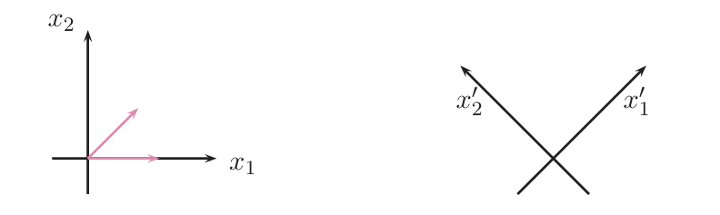

<!DOCTYPE html>
<html lang="es">
<head>
<meta charset="utf-8">
<script>try{var t=localStorage.getItem('tema');if(t==='dark'||t==='light')document.documentElement.setAttribute('data-theme',t)}catch(e){}</script>
<meta name="viewport" content="width=device-width, initial-scale=1">
<title>Álgebra · 5.2 Matrices ortogonales</title>
<link rel="stylesheet" href="../assets/katex/katex.min.css">
<link rel="stylesheet" href="../assets/resumen.css">
<script defer src="../assets/katex/katex.min.js"></script>
<script defer src="../assets/katex/auto-render.min.js"></script>
<script defer src="../assets/resumen.js"></script>
<script defer src="../assets/animaciones.js"></script>
<script defer src="../assets/tres-d.js"></script>
</head>
<body>
<div class="topbar"><div class="in">
  <a href="../index.html">← Índice de temas</a>
  <span><button id="btn-sol" type="button">Mostrar soluciones</button> <button id="btn-tema" type="button">Claro / oscuro</button></span>
</div></div>

<div class="layout">
<nav class="side-toc" aria-label="Índice del tema"><b>En esta página</b></nav>
<main>

<header class="hero">
  <div class="kick">Módulo 5 · Ortogonalidad · Tema 5.2</div>
  <h1>Matrices ortogonales</h1>
  <p>Las matrices que <b>mueven el plano y el espacio sin deformarlos</b>: giros y simetrías. Cómo reconocerlas ($A^tA=I$), qué conservan (longitudes, ángulos, productos escalares), qué tipos hay en $\mathbb R^2$ y en $\mathbb R^3$, y la <b>factorización $QR$</b>, que es Gram-Schmidt escrito con matrices y sirve para resolver sistemas.</p>
  <div class="chips"><span>Libro oficial: Álgebra para Ingenieros, §5.2 (pp. 214-220)</span><span>Ejercicios: E Ej. 5.16–5.25 (pp. 174-182)</span><span>Lay §6.2 y §6.4</span><span>⏱ ~7–9 h de estudio</span></div>
  <div class="legend">
    <span class="src" data-l="U" data-ref="Álgebra para Ingenieros (UNED) — libro oficial">U</span> oficial
    <span class="src" data-l="E" data-ref="Ejercicios de Álgebra para Ingenieros (UNED)">E</span> ejercicios
    <span class="src" data-l="L" data-ref="Lay, Álgebra Lineal y sus Aplicaciones">L</span> Lay
    <span class="src" data-l="X" data-ref="Examen de convocatorias anteriores (Álgebra, UNED)">X</span> examen
    <span class="src" data-l="P" data-ref="Explicación o ejemplo propio, sin página en los libros">P</span> propio
    — pasa el ratón (o toca) por cada etiqueta para ver libro y página; en pantallas anchas aparecen en el margen derecho.
  </div>
</header>

<!-- ============================ 0 ============================ -->
<h2 id="prereq"><span class="n">0</span>Antes de empezar <span class="src" data-l="U" data-ref="U §5.2.1 Elementos didácticos, p. 214">U p.214</span></h2>

<div class="box intu"><span class="h">La idea del tema en una frase</span>
  <p>Gira una hoja de papel sobre la mesa, o dale la vuelta como si la vieras en un espejo: <b>no se estira ni se encoge</b>, las longitudes y los ángulos del dibujo siguen igual. Una <b>matriz ortogonal</b> es exactamente la tabla de números que hace eso. Se reconoce con una sola cuenta, $A^tA=I$: sus columnas son <b>vectores de longitud 1 perpendiculares entre sí</b> (un sistema ortonormal, tema 5.1). Y de ahí sale casi todo: la inversa es la traspuesta, el determinante vale $\pm1$, los únicos valores propios reales posibles son $\pm1$, y en $\mathbb R^2$ y $\mathbb R^3$ solo hay giros y simetrías. Además, aplicar Gram-Schmidt a las columnas de una matriz cualquiera da su <b>factorización $QR$</b> ($Q$ ortogonal, $R$ triangular).</p>
</div>

<h3>Qué necesitas saber ya</h3>
<ul>
  <li>Del <a href="tema_5_1_producto_escalar.html">tema 5.1</a> (imprescindible): producto escalar estándar $x\cdot y=x_1y_1+\dots+x_ny_n=X^tY$, norma, sistema <b>ortonormal</b>, que un sistema ortogonal es libre (Teor. 5.2), las coordenadas en una base ortonormal $x_i=x\cdot e_i$ (Teor. 5.3) y el método de <b>Gram-Schmidt</b> (el corazón de la $QR$).</li>
  <li>Del <a href="tema_1_2_algebra_matricial.html">tema 1.2</a>: producto de matrices, traspuesta $(AB)^t=B^tA^t$, inversa, rango, matrices elementales.</li>
  <li>Del <a href="tema_1_3_determinantes.html">tema 1.3</a>: $\det(AB)=\det A\det B$, $\det A^t=\det A$.</li>
  <li>Del <a href="tema_1_4_sistemas_ecuaciones.html">tema 1.4</a>: clasificación de $AX=B$ por rangos (Rouché-Frobenius).</li>
  <li>Del <a href="tema_4_2_valores_vectores_propios.html">tema 4.2</a>: valor y vector propio, ecuación característica. Del <a href="tema_3_5_inversa_cambios_base.html">tema 3.5</a>: matriz de cambio de base.</li>
</ul>

<h3>Mapa del tema</h3>
<table>
  <tr><th>Apartado</th><th>Qué contiene</th><th>Dónde</th></tr>
  <tr><td>1 Matriz ortogonal</td><td>Def. 5.13, Teor. 5.5 ($A^tA=I$), ejemplos y contraejemplos, $m\times n$</td><td>U p.214-215 · L §6.2</td></tr>
  <tr><td>2 Matrices cuadradas</td><td>Teor. 5.6 ($A^{-1}=A^t$), filas ortonormales, coordenadas</td><td>U p.216-217 · L p.344</td></tr>
  <tr><td>3 Qué conservan</td><td>Producto escalar, norma, ángulo, distancia; $\det=\pm1$; valores propios reales $\pm1$; producto e inversa</td><td>U p.217 · E 5.16, 5.18, 5.20</td></tr>
  <tr><td>4 Giros y simetrías en $\mathbb R^2$</td><td>Las <b>dos</b> familias de ortogonales $2\times2$ (giros y simetrías), animación 2D</td><td>U p.217 · E 5.17</td></tr>
  <tr><td>5 Giros y simetrías en $\mathbb R^3$</td><td>Eje y ángulo por la traza, simetría respecto de un plano, composición, animación 3D</td><td>propio (+ E 5.25)</td></tr>
  <tr><td>6 Transformaciones ortogonales</td><td>Endomorfismos que conservan el producto escalar; cambio entre bases ortonormales</td><td>U p.217</td></tr>
  <tr><td>7 Factorización $QR$</td><td>$A=QR$, cálculo, sistemas $AX=B$, adelanto de mínimos cuadrados</td><td>U p.218-220 · L §6.4</td></tr>
  <tr><td>9 Ejercicios del libro</td><td>E 5.16–5.25 + 12 ejemplos propios + autoevaluación</td><td>E pp.174-182 · U p.238</td></tr>
  <tr><td>10 Ejemplos de examen</td><td>7 ejercicios de exámenes anteriores por métodos + 3 propios</td><td>X</td></tr>
  <tr><td>11 Chuleta</td><td>Fórmulas con hipótesis, lista de comprobación, errores frecuentes</td><td>—</td></tr>
</table>

<div class="box tip"><span class="h">Qué se pide en los ejercicios y en el examen</span>
  <p><b>(a)</b> <b>¿Es ortogonal esta matriz?</b> o <b>¿qué parámetros la hacen ortogonal?</b> (E 5.21, 5.25; X Sept. 2025, Sept. 2023, Ene. 2022). <b>(b)</b> <b>Demostrar propiedades</b>: conserva la norma, $\det=\pm1$, $\operatorname{rang}A=n$, valores propios $\pm1$ (E 5.16, 5.18, 5.20). <b>(c)</b> <b>Definir transformación ortogonal y dar un ejemplo en $\mathbb R^2$</b> (X Feb. 2018, Feb. 2024). <b>(d)</b> <b>Factorización $QR$</b> de una matriz concreta y resolver un sistema con ella (E 5.23-5.24; X Feb. 2020) o <b>explicarla</b> (X Feb. 2019). Casi siempre vale 1 punto de los 10 y es una de las seis preguntas cortas.</p>
  <span class="src" data-l="P" data-ref="Clasificación propia a partir de E §5.2 y los exámenes 2017-2026">propio</span>
</div>

<div class="box warn"><span class="h">Convenios del tema que conviene fijar desde ya</span>
  <ul>
    <li><b>Dos palabras casi iguales.</b> Un <i>sistema</i> de vectores es <b>ortogonal</b> si son perpendiculares dos a dos (tema 5.1); una <i>matriz</i> es <b>ortogonal</b> si sus columnas forman un sistema <b>orto<u>normal</u></b> (perpendiculares <b>y</b> de longitud 1). Una matriz con columnas solo perpendiculares <b>no</b> es ortogonal.</li>
    <li><b>U admite matrices $m\times n$</b> (Def. 5.13): la $Q$ de una $QR$ de una matriz $3\times2$ «es ortogonal» en U. <b>Lay solo llama ortogonal a una matriz cuadrada</b> (y a las de columnas ortonormales no cuadradas las llama «de columnas ortonormales»). Manda U.</li>
    <li>Todo el tema usa el producto escalar <b>estándar</b> de $\mathbb R^n$ y las matrices columna $X$ para los vectores.</li>
  </ul>
  <span class="src" data-l="U" data-ref="U Def. 5.13, p. 214">U p.214</span>
  <span class="src" data-l="L" data-ref="Lay §6.2, p. 344: «matriz ortogonal» = cuadrada invertible con U⁻¹ = Uᵀ">L p.344</span>
</div>

<!-- ============================ 1 ============================ -->
<h2 id="s1"><span class="n">1</span>Matriz ortogonal: columnas ortonormales <span class="src" data-l="U" data-ref="U §5.2.1, Def. 5.13, Ejemplos 5.24-5.25 y Teorema 5.5, p. 214-215">U p.214-215</span> <span class="src" data-l="L" data-ref="Lay §6.2, Teorema 6, p. 343">L §6.2 p.343</span></h2>

<div class="box intu"><span class="h">Idea intuitiva: columnas = «regla y escuadra» perfectas</span>
  <p>Las columnas de una matriz $A$ son las <b>imágenes de los vectores de la base canónica</b>: $A\,e_1=$ columna 1, $A\,e_2=$ columna 2… Si la transformación $X\mapsto AX$ no deforma nada, entonces $Ae_1,Ae_2,\dots$ (que son las imágenes de unos vectores de longitud $1$ y perpendiculares) tienen que seguir siendo de longitud $1$ y perpendiculares. Eso es justo lo que pide la definición: las columnas son un <b>sistema ortonormal</b>.</p>
</div>

<div class="box def"><span class="h">Definición 5.13 — matriz ortogonal</span>
  <p>$A\in\mathcal M_{m\times n}$ es <b>ortogonal</b> si $\operatorname{Col}A$ (el conjunto de sus vectores columna) es un <b>sistema ortonormal</b> de $\mathbb R^m$ con el producto escalar estándar: cada columna tiene norma $1$ y dos columnas distintas son perpendiculares.</p>
  <span class="src" data-l="U" data-ref="U §5.2.1, Definición 5.13, p. 214">U p.214</span>
</div>

<div class="box ex"><span class="h">Ejemplo resuelto: $\tfrac15\begin{pmatrix}3&-4\cr4&3\end{pmatrix}$ sí; $\begin{pmatrix}1&1\cr-1&1\end{pmatrix}$ no</span>
  <ol class="steps">
    <li><b>Primera matriz.</b> Columnas $\tfrac15(3,4)$ y $\tfrac15(-4,3)$. Normas: $\tfrac{\sqrt{9+16}}5=1$ las dos. Producto escalar: $\tfrac{-12+12}{25}=0$. Sistema ortonormal: <b>es ortogonal</b>.</li>
    <li><b>Segunda matriz.</b> Columnas $(1,-1)$ y $(1,1)$. Son perpendiculares ($1-1=0$) pero miden $\sqrt2\neq1$: el sistema es ortogonal, <b>no ortonormal</b>; la matriz <b>no</b> es ortogonal. (Sí lo sería $\tfrac1{\sqrt2}\begin{pmatrix}1&1\cr-1&1\end{pmatrix}$.)</li>
  </ol>
  <span class="src" data-l="P" data-ref="Ejemplo propio; criterio de la Definición 5.13, U p. 214">propio</span>
</div>

<div class="box ex"><span class="h">Ejemplo 5.24 de U: columnas unitarias pero no perpendiculares</span>
  <p>$A=\begin{pmatrix}\frac{\sqrt2}2&-\frac{\sqrt2}2&0\cr0&\frac{\sqrt2}2&-\frac{\sqrt2}2\cr\frac{\sqrt2}2&0&-\frac{\sqrt2}2\end{pmatrix}$. Las tres columnas tienen norma $1$, pero $\left(\frac{\sqrt2}2,0,\frac{\sqrt2}2\right)\cdot\left(-\frac{\sqrt2}2,\frac{\sqrt2}2,0\right)=-\frac12\neq0$. Luego <b>no es ortogonal</b>. U da una segunda razón: $\det A=0$, las columnas son linealmente dependientes y «todo sistema ortogonal es libre» (Teor. 5.2), así que no pueden ser ortonormales.</p>
  <span class="src" data-l="U" data-ref="U Ejemplo 5.24, p. 214-215">U p.214-215</span>
  <span class="src" data-l="P" data-ref="Es el preset «U Ej. 5.24» de la animación 3D de la sección 5">animación 3D, sección 5</span>
</div>

<div class="box thm"><span class="h">Teorema 5.5 — caracterización con un producto de matrices</span>
  <p>$$A\ \text{es ortogonal}\iff A^tA=I_n .$$</p>
  <p><b>Por qué:</b> el elemento $(i,j)$ de $A^tA$ es (fila $i$ de $A^t$)·(columna $j$ de $A$) $=u_i\cdot u_j$, el producto escalar de las columnas $i$ y $j$. Que sea la identidad significa $u_i\cdot u_i=1$ (norma $1$) y $u_i\cdot u_j=0$ si $i\neq j$ (perpendiculares): justo la Def. 5.13.</p>
  <span class="src" data-l="U" data-ref="U §5.2.1, Teorema 5.5, p. 215">U p.215</span>
  <span class="src" data-l="L" data-ref="Lay §6.2, Teorema 6: U tiene columnas ortonormales ⇔ UᵀU = I, p. 343">L p.343</span>
</div>

<div class="box ex"><span class="h">Ejemplo 5.25 de U: ¿para qué $a,b$ es ortogonal el sistema $\{(1,2,a),(4,2,2),(2,3,b)\}$?</span>
  <ol class="steps">
    <li>Se forma $A$ con esos vectores como columnas y se calcula $A^tA=\begin{pmatrix}a^2+5&2a+8&ab+8\cr2a+8&24&2b+14\cr ab+8&2b+14&b^2+13\end{pmatrix}$.</li>
    <li>Para que sea <b>ortogonal</b> los elementos fuera de la diagonal han de ser $0$: $2a+8=0,\ ab+8=0,\ 2b+14=0$. De la primera $a=-4$, de la tercera $b=-7$, y entonces $ab+8=36\neq0$: <b>no existe</b> ninguna pareja.</li>
    <li>(Y aunque existiera, para que fuera <b>ortonormal</b> habría que exigir además que la diagonal valiera $1$: aquí el $24$ ya lo impide.)</li>
  </ol>
  <span class="src" data-l="U" data-ref="U Ejemplo 5.25, p. 215">U p.215</span>
</div>

<div class="box warn"><span class="h">Error típico: «columnas perpendiculares» ≠ «matriz ortogonal»</span>
  <p>Hacen falta <b>las dos</b> cosas: perpendiculares <b>y</b> unitarias. Para descartar una matriz basta una columna que no mida $1$ (por eso $\begin{pmatrix}7&4\cr-2&1\end{pmatrix}$ no es ortogonal: la primera columna mide $\sqrt{53}$; X Sept. 2017, <a href="tema_4_3_diagonalizacion.html#ex-sep17a-4">tema 4.3</a>). Y para confirmarla hay que comprobar <b>todos</b> los pares (con $n$ columnas, $\binom n2$ productos) y las $n$ normas.</p>
  <span class="src" data-l="P" data-ref="Aviso propio; cf. U Ejemplo 5.24 p. 214-215 y X Sept. 2017 (A) ej. 4">propio</span>
</div>

<div class="box intu"><span class="h">Matrices ortogonales no cuadradas</span>
  <p>Con la definición de U, $A=\tfrac13\begin{pmatrix}1&2\cr2&1\cr2&-2\end{pmatrix}$ ($3\times2$) es ortogonal: sus dos columnas son unitarias ($\frac{1+4+4}9=1$) y perpendiculares ($2+2-4=0$), es decir $A^tA=I_2$. Pero <b>ojo</b>: $AA^t\neq I_3$. Solo se cumple $A^tA=I_n$; esa $A$ «mete» $\mathbb R^2$ dentro de $\mathbb R^3$ sin deformar. Siempre debe ser $n\le m$ (no caben más de $m$ vectores perpendiculares unitarios en $\mathbb R^m$; E 5.18 B, sección 9).</p>
  <span class="src" data-l="P" data-ref="Ejemplo propio (la Q de la factorización de la sección 7, Propio 8); U Def. 5.13 permite m×n, p. 214">propio</span>
</div>

<!-- ============================ 2 ============================ -->
<h2 id="s2"><span class="n">2</span>Matrices cuadradas: la inversa es la traspuesta <span class="src" data-l="U" data-ref="U §5.2.1, Teorema 5.6 y Ejemplos 5.26-5.27, p. 216-217">U p.216-217</span> <span class="src" data-l="L" data-ref="Lay §6.2, definición de matriz ortogonal y Ejemplo 7, p. 344">L p.344</span></h2>

<div class="box thm"><span class="h">Teorema 5.6 — $A^{-1}=A^t$</span>
  <p>Si $A$ es <b>cuadrada</b> de orden $n$: $\quad A\ \text{ortogonal}\iff A^{-1}=A^t\quad(\iff A^tA=I_n)$. Equivalentemente: una matriz cuadrada de orden $n$ es ortogonal si y solo si sus columnas forman una <b>base ortonormal de $\mathbb R^n$</b>.</p>
  <p><b>Por qué:</b> en una matriz cuadrada, $A^tA=I$ ya dice que $A^t$ es la inversa (la inversa por un lado lo es por los dos, tema 1.2). Y $n$ vectores ortonormales de $\mathbb R^n$ son libres (Teor. 5.2), luego base.</p>
  <span class="src" data-l="U" data-ref="U §5.2.1, Teorema 5.6 y recuadro posterior, p. 216">U p.216</span>
  <span class="src" data-l="L" data-ref="Lay §6.2, p. 344: matriz ortogonal ⇒ U⁻¹ = Uᵀ">L p.344</span>
</div>

<div class="box thm"><span class="h">Consecuencia (la propiedad que U no enuncia pero se usa): las <b>filas</b> también son ortonormales</span>
  <p>Si $A$ es cuadrada y ortogonal, $A^{-1}=A^t$ implica también $AA^t=I$, y el elemento $(i,j)$ de $AA^t$ es (fila $i$)·(fila $j$). Así, <b>las filas son otra base ortonormal</b> y $A^t$ <b>también es ortogonal</b>. Sirve para completar matrices (X Sept. 2023) y para comprobar con filas o con columnas, lo que sea más cómodo. <b>Solo en cuadradas:</b> en la $3\times2$ de arriba las filas no son ni unitarias.</p>
  <span class="src" data-l="P" data-ref="Deducción propia de U Teor. 5.6 p. 216; cf. E Ej. 5.18 D p. 176 y Lay §6.2 p. 344 (ejercicios 27-28)">propio · E 5.18 D</span>
  <span class="src" data-l="L" data-ref="Lay §6.2, p. 344: «dicha matriz también debe tener filas ortonormales»">L p.344</span>
</div>

<div class="box ex"><span class="h">Ejemplos 5.26 y 5.27 de U: comprobar, invertir y dar coordenadas sin resolver ningún sistema</span>
  <p>$A=\begin{pmatrix}\frac13&\frac23&\frac23\cr\frac23&-\frac23&\frac13\cr\frac23&\frac13&-\frac23\end{pmatrix}=\frac13\begin{pmatrix}1&2&2\cr2&-2&1\cr2&1&-2\end{pmatrix}$.</p>
  <ol class="steps">
    <li><b>Ortogonal.</b> Columnas $\tfrac13(1,2,2),\tfrac13(2,-2,1),\tfrac13(2,1,-2)$: normas $\tfrac{\sqrt9}3=1$; productos (sin el $\tfrac19$): $2-4+2=0$, $2+2-4=0$, $4-2-2=0$. Además $A$ es simétrica y $A\cdot A=I$ (U lo comprueba así).</li>
    <li><b>Inversa gratis:</b> $A^{-1}=A^t=A$ (por ser simétrica).</li>
    <li><b>Coordenadas de $x=(2,2,-4)$ en la base $\operatorname{Col}A$</b> (Teor. 5.3: en base ortonormal, $c_i=x\cdot u_i$): $c_1=\tfrac{2+4-8}3=-\tfrac23$, $c_2=\tfrac{4-4-4}3=-\tfrac43$, $c_3=\tfrac{4+2+8}3=\tfrac{14}3$. En una línea: $X_{\operatorname{Col}A}=A^tX$. Comprobación: $-\tfrac23u_1-\tfrac43u_2+\tfrac{14}3u_3=(2,2,-4)$.</li>
    <li><b>Dato extra (propio):</b> $\det A=1$ y tiene valor propio $1$ con vector propio $(2,1,1)$: es un <b>giro de $180^\circ$</b> alrededor de la recta $\langle(2,1,1)\rangle$. Cuentas: $\operatorname{tr}A=\frac{1-2-2}3=-1=1+2\cos\theta\Rightarrow\cos\theta=-1$, $\theta=180^\circ$; y $(A-I)X=0$, con $3(A-I)=\begin{pmatrix}-2&2&2\cr2&-5&1\cr2&1&-5\end{pmatrix}$, da $x=y+z$ e $y=z$, luego $\langle(2,1,1)\rangle$. Un giro de $180^\circ$ es la <b>simetría respecto de la recta-eje</b> (simetría axial), no respecto de un plano (esa tendría $\det=-1$ y $\operatorname{tr}=1$). Pruébalo en la animación 3D, botón «U Ej. 5.26».</li>
  </ol>
  <span class="src" data-l="U" data-ref="U Ejemplos 5.26 y 5.27, p. 216-217">U p.216-217</span>
  <span class="src" data-l="P" data-ref="Dato extra propio: det = 1, tr = −1 ⇒ giro de 180°; comprobado con sympy">propio</span>
</div>

<div class="box tip"><span class="h">Truco de examen: invertir una ortogonal es trasponer</span>
  <p>Si te piden $A^{-1}$ y $A$ es ortogonal (o lo demuestras en una línea), la respuesta es $A^t$. Ahorras Gauss-Jordan o adjuntos. Y resolver $AX=B$ es $X=A^tB$ (E 5.19, sección 9).</p>
  <span class="src" data-l="P" data-ref="Truco propio a partir de U Teor. 5.6 p. 216 y E Ej. 5.19 p. 177">propio</span>
</div>

<!-- ============================ 3 ============================ -->
<h2 id="s3"><span class="n">3</span>Qué conserva una matriz ortogonal <span class="src" data-l="U" data-ref="U §5.2.1, propiedades de una matriz ortogonal, p. 217" >U p.217</span> <span class="src" data-l="L" data-ref="Lay §6.2, Teorema 7: ‖Ux‖ = ‖x‖, (Ux)·(Uy) = x·y, p. 343">L p.343</span></h2>

<div class="box intu"><span class="h">Idea: lo que mide el producto escalar, no cambia</span>
  <p>Longitudes, distancias y ángulos se definen <b>solo</b> con el producto escalar (tema 5.1). Si una matriz conserva el producto escalar, conserva todo lo demás «de regalo». Y conserva el producto escalar porque, al calcular $(AX)^t(AY)$, aparece justo $A^tA=I$.</p>
</div>

<div class="box thm"><span class="h">Propiedades de una matriz ortogonal</span>
  <p>Sea $A\in\mathcal M_{m\times n}$ ortogonal y $x,y\in\mathbb R^n$. Entonces:</p>
  <p>$$Ax\cdot Ay=x\cdot y,\qquad \|Ax\|=\|x\|,\qquad Ax\cdot Ay=0\iff x\cdot y=0 .$$</p>
  <p><b>Demostración (E 5.16):</b> $Ax\cdot Ay=(AX)^t(AY)=X^tA^tAY=X^tY=x\cdot y$. La norma sale tomando $y=x$ y raíz cuadrada.</p>
  <p>Como el coseno del ángulo y la distancia $d(x,y)=\|x-y\|$ se escriben con el producto escalar y la norma, también se conservan <b>ángulos</b> y <b>distancias</b>.</p>
  <span class="src" data-l="U" data-ref="U §5.2.1, propiedades de una matriz ortogonal, p. 217">U p.217</span>
  <span class="src" data-l="E" data-ref="Ejercicios de Álgebra, Ej. 5.16, p. 175">E 5.16 p.175</span>
  <span class="src" data-l="L" data-ref="Lay §6.2, Teorema 7, p. 343">L p.343</span>
</div>

<div class="box thm"><span class="h">Otras propiedades (deducidas en una línea de $A^tA=I$; en U están en los ejercicios)</span>
  <table>
    <tr><th>Propiedad</th><th>Razón</th><th>Dónde</th></tr>
    <tr><td>$\operatorname{rang}A=n$ y $n\le m$</td><td>las $n$ columnas son un sistema ortonormal ⇒ libre (Teor. 5.2)</td><td>E 5.18 A, B</td></tr>
    <tr><td>$A$ cuadrada ⇒ $\det A=\pm1$</td><td>$1=\det(A^tA)=\det A^t\det A=(\det A)^2$</td><td>E 5.18 C</td></tr>
    <tr><td>$A$ cuadrada ⇒ $A^t$ ortogonal</td><td>$A^{-1}=A^t$ ⇒ $(A^t)^tA^t=AA^t=I$</td><td>E 5.18 D</td></tr>
    <tr><td>$AX=B$ es <b>compatible determinado o incompatible</b> (nunca indeterminado)</td><td>$\operatorname{rang}A=n$ = nº de incógnitas; Rouché-Frobenius</td><td>E 5.18 E · <a href="tema_1_4_sistemas_ecuaciones.html#ex-feb22pb">1.4 #ex-feb22pb</a></td></tr>
    <tr><td>Si $\lambda\in\mathbb R$ es valor propio, <b>$\lambda=1$ o $\lambda=-1$</b></td><td>$\|v\|=\|Av\|=|\lambda|\|v\|$ ⇒ $|\lambda|=1$</td><td>E 5.20 · U p.238 (cuestión 6)</td></tr>
    <tr><td>$A,B$ ortogonales de orden $n$ ⇒ $AB$ ortogonal; $A^{-1}$ ortogonal</td><td>$(AB)^t(AB)=B^tA^tAB=B^tB=I$</td><td>Propio 11</td></tr>
  </table>
  <span class="src" data-l="E" data-ref="Ejercicios de Álgebra, Ej. 5.18 p. 176 y Ej. 5.20 p. 177">E p.176-177</span>
  <span class="src" data-l="U" data-ref="U p. 238, Ejercicios de Autoevaluación, cuestión 6; solución p. 313">U p.238 · 313</span>
</div>

<div class="box warn"><span class="h">Tres matices que caen como trampa</span>
  <ul>
    <li><b>$\det A=\pm1$ NO basta:</b> $\begin{pmatrix}2&0\cr0&\frac12\end{pmatrix}$ tiene $\det=1$ y no es ortogonal (columna de norma $2$). Es condición necesaria, no suficiente.</li>
    <li><b>«Valores propios $\pm1$» solo para los <u>reales</u>.</b> Una ortogonal puede no tener ninguno real: el giro de $90^\circ$ $\begin{pmatrix}0&-1\cr1&0\end{pmatrix}$ tiene $\lambda^2+1=0$, es decir $\lambda=\pm i$. (Sus valores propios complejos siempre tienen módulo $1$.) Por eso una ortogonal <b>no siempre es diagonalizable</b> en $\mathbb R$.</li>
    <li><b>$A^t$ ortogonal:</b> siempre si $A$ es cuadrada; en rectangulares ($3\times2$) ¡$A^t$ ($2\times3$) no puede serlo!</li>
  </ul>
  <span class="src" data-l="E" data-ref="E Ej. 5.18 C-D p. 176; Ej. 5.20 p. 177 (la demostración del libro vale para valores propios reales)">E 5.18, 5.20</span>
</div>

<!-- ============================ 4 ============================ -->
<h2 id="s4"><span class="n">4</span>Giros y simetrías en $\mathbb R^2$: todas las ortogonales $2\times2$ <span class="src" data-l="E" data-ref="Ejercicios de Álgebra, Ej. 5.17, p. 175">E 5.17 p.175</span> <span class="src" data-l="U" data-ref="U §5.2.1, Observación y Ejemplo 5.28, p. 217">U p.217</span></h2>

<div class="box intu"><span class="h">Idea: solo hay dos formas de mover el plano sin deformarlo</span>
  <p>Hay que mandar $e_1$ a algún punto de la circunferencia unidad (eso fija un ángulo $\theta$) y $e_2$ a uno de los <b>dos</b> puntos de la circunferencia perpendiculares a él. O $e_2$ queda «a la izquierda» de $e_1$ (como siempre: es un <b>giro</b>), o queda «a la derecha» (el plano se ha <b>dado la vuelta</b>, como en un espejo: es una <b>simetría</b>). No hay más.</p>
</div>

<div class="box thm"><span class="h">Las ortogonales $2\times2$ (caracterización completa)</span>
  <p>$A=\begin{pmatrix}a&b\cr c&d\end{pmatrix}$ es ortogonal $\iff a^2+c^2=1,\ ab+cd=0,\ b^2+d^2=1$ (E 5.17: es $A^tA=I_2$ escrito). Resolviendo: existe un único $\theta\in[0,2\pi)$ con $a=\cos\theta,\ c=\sin\theta$, y la segunda columna es $\pm(-\sin\theta,\cos\theta)$. Es decir, $A$ es de uno de estos dos tipos:</p>
  <table>
    <tr><th></th><th>Matriz</th><th>$\det$</th><th>Qué hace</th><th>Valores propios</th></tr>
    <tr><td><b>Giro</b></td><td>$R_\theta=\begin{pmatrix}\cos\theta&-\sin\theta\cr\sin\theta&\cos\theta\end{pmatrix}$</td><td>$+1$</td><td>gira el plano $\theta$ (antihorario) alrededor del origen</td><td>$\cos\theta\pm i\sin\theta$; reales solo si $\theta=0,\pi$</td></tr>
    <tr><td><b>Simetría</b></td><td>$S_\theta=\begin{pmatrix}\cos\theta&\sin\theta\cr\sin\theta&-\cos\theta\end{pmatrix}$</td><td>$-1$</td><td>refleja respecto de la recta por el origen de ángulo $\theta/2$</td><td>$1$ (la recta) y $-1$ (su perpendicular)</td></tr>
  </table>
  <p><b>Receta:</b> la primera columna da $\theta$ ($\cos\theta=a$, $\sin\theta=c$); el determinante decide el tipo. Para la simetría, $S_\theta v=v$ si $v=(\cos\frac\theta2,\sin\frac\theta2)$ y $S_\theta w=-w$ si $w=(-\sin\frac\theta2,\cos\frac\theta2)$; además $S_\theta=R_\theta\begin{pmatrix}1&0\cr0&-1\end{pmatrix}$ (primero simetría respecto de $OX$, luego giro).</p>
  <span class="src" data-l="E" data-ref="Ejercicios de Álgebra, Ej. 5.17, p. 175 (el libro se queda en las tres ecuaciones; la clasificación en giros y simetrías es desarrollo propio)">E 5.17 p.175</span>
  <span class="src" data-l="P" data-ref="Desarrollo propio: ortogonales 2×2 = giros ∪ simetrías; U p. 217 solo dice «relacionadas con giros y simetrías»">propio</span>
</div>

<div class="box ex"><span class="h">Ejemplo 5.28 de U: el giro de $45^\circ$</span>
  <p>$A=\begin{pmatrix}\frac1{\sqrt2}&-\frac1{\sqrt2}\cr\frac1{\sqrt2}&\frac1{\sqrt2}\end{pmatrix}$ es ortogonal ($\cos45^\circ=\sin45^\circ=\tfrac1{\sqrt2}$, $\det A=\tfrac12+\tfrac12=1$): un <b>giro</b> de $45^\circ$. Las ecuaciones $X'=AX$ son $x_1'=\tfrac1{\sqrt2}x_1-\tfrac1{\sqrt2}x_2,\ x_2'=\tfrac1{\sqrt2}x_1+\tfrac1{\sqrt2}x_2$. Por ejemplo, $(1,0)$ pasa a $\left(\tfrac1{\sqrt2},\tfrac1{\sqrt2}\right)$, de norma $1$ y a $45^\circ$ del eje.</p>
  <figure class="bookfig"><figcaption>Ejemplo 5.28 de U: a la izquierda, el vector $(1,0)$ y su imagen $\left(\frac1{\sqrt2},\frac1{\sqrt2}\right)$; a la derecha, los ejes girados $45^\circ$. <span class="src" data-l="U" data-ref="U Ejemplo 5.28 y figura, p. 217">U p.217</span></figcaption></figure>
  <span class="src" data-l="U" data-ref="U Ejemplo 5.28, p. 217">U p.217</span>
</div>

<div class="box ex"><span class="h">Animación: giros, simetrías y matrices que deforman</span>
  <div class="anim-ortog" data-a="0.7071,-0.7071,0.7071,0.7071" data-x="2,1" data-y="0.5,1.5"></div>
  <span class="src" data-l="P" data-ref="Animación propia (componente assets/animaciones.js, anim-ortog); giro de U Ejemplo 5.28 p. 217">P</span>
</div>

<div class="box warn"><span class="h">Errores típicos en $\mathbb R^2$</span>
  <ul>
    <li><b>«Toda ortogonal $2\times2$ es un giro»</b>: falso. $\begin{pmatrix}0&1\cr1&0\end{pmatrix}$ es ortogonal con $\det=-1$: simetría respecto de $y=x$; ningún ángulo de giro la produce.</li>
    <li>Decir que $S_\theta$ es la simetría respecto de la recta de ángulo $\theta$: es la de ángulo <b>$\theta/2$</b>.</li>
    <li>Pensar que «al completar» hay una sola solución: dada una columna (o fila) hay <b>siempre dos</b> ortogonales, una de cada tipo (X Sept. 2023, sección 10).</li>
  </ul>
</div>

<!-- ============================ 5 ============================ -->
<h2 id="s5"><span class="n">5</span>Giros y simetrías en $\mathbb R^3$: eje, ángulo y plano <span class="src" data-l="P" data-ref="Desarrollo propio a partir de U p. 217 (observación sobre giros y simetrías en R^n) y E Ej. 5.25 p. 182">propio</span></h2>

<p>U solo dice que en $\mathbb R^n$ las ortogonales «están relacionadas con giros y simetrías» (p.217) y trabaja el giro de $\mathbb R^2$. Lo siguiente <b>no lo desarrolla U</b>, pero lo usa E 5.25 (un giro en $\mathbb R^3$) y sirve para entender qué es una ortogonal $3\times3$. Si vas justo de tiempo, lee la tabla y el truco de la traza.</p>

<div class="box intu"><span class="h">Idea: un giro en el espacio tiene eje; una simetría tiene plano</span>
  <p>Un giro de $\mathbb R^3$ deja fija una <b>recta</b> (el eje de la puerta que se abre) y gira todo lo demás alrededor de ella. Una simetría respecto de un plano (un espejo) deja fijo ese <b>plano</b> y cambia de signo la dirección perpendicular. Las dos cosas se detectan con <b>valores propios</b>: el eje es el subespacio de vectores propios de valor propio $1$; la normal del espejo, el de valor propio $-1$.</p>
</div>

<div class="box thm"><span class="h">Regla de clasificación de una ortogonal $3\times3$: primero $\det$, luego la traza</span>
  <p><b>Paso 0.</b> Comprueba $A^tA=I$. <b>Paso 1.</b> Calcula $\det A=\pm1$. <b>Paso 2.</b> Calcula $\operatorname{tr}A$ y entra en la tabla:</p>
  <table>
    <tr><th>$\det A$</th><th>$\operatorname{tr}A$</th><th>Qué es</th><th>Qué buscar</th></tr>
    <tr><td rowspan="3">$+1$</td><td>$3$</td><td>$A=I$</td><td>—</td></tr>
    <tr><td>$-1$</td><td><b>Giro de $180^\circ$ = simetría respecto de la recta-eje</b> (simetría axial; $A^2=I$, $A$ simétrica)</td><td>Eje $=\operatorname{Nuc}(A-I)$</td></tr>
    <tr><td>entre $-1$ y $3$</td><td><b>Giro</b> de ángulo $\theta$ alrededor de un eje $u$; valores propios $1,\ \cos\theta\pm i\sin\theta$</td><td>Eje $=\operatorname{Nuc}(A-I)$; $\cos\theta=\dfrac{\operatorname{tr}A-1}2$</td></tr>
    <tr><td rowspan="3">$-1$</td><td>$1$</td><td><b>Simetría respecto de un plano</b>; valores propios $1,1,-1$</td><td>Plano $=\operatorname{Nuc}(A-I)$, normal $n=\operatorname{Nuc}(A+I)$; $S=I-\dfrac{2\,nn^t}{n^tn}$</td></tr>
    <tr><td>$-3$</td><td>$A=-I$ (simetría respecto del origen)</td><td>—</td></tr>
    <tr><td>entre $-3$ y $1$</td><td><b>Simetría rotatoria</b> (rotorreflexión): giro de ángulo $\psi$ alrededor de $n$ compuesto con la simetría respecto del plano $\perp n$; <b>no</b> es simetría respecto de un plano</td><td>$n=\operatorname{Nuc}(A+I)$; $\operatorname{tr}A=2\cos\psi-1$</td></tr>
  </table>
  <p>En una línea: $\det=+1$ ⇒ giro (eje: valor propio $1$); $\det=-1$ ⇒ hay un valor propio $-1$ cuyo vector $n$ es la normal, y si además $\operatorname{tr}=1$ es una simetría pura respecto de un plano.</p>
  <p><b>Por qué siempre hay un valor propio real $\pm1$:</b> el polinomio característico tiene grado $3$ y coeficientes reales, así que tiene al menos una raíz real; por E 5.20 vale $\pm1$. Si $\det=+1$, las otras dos raíces son complejas conjugadas $\mu,\bar\mu$ (o reales $\pm1$) con $\mu\bar\mu=|\mu|^2=1$, y el producto de las tres es $\det=1$, así que la real es $1$: de ahí el eje. (La ampliación a valores propios complejos, E 5.20 paso 7, queda fuera de U.)</p>
  <p><b>Por qué en el plano perpendicular al eje $A$ es un giro de $\mathbb R^2$:</b> si $x\perp u$, entonces $Ax\cdot u=Ax\cdot Au=x\cdot u=0$ (porque $Au=u$ y $A$ conserva el producto escalar): el plano $u^\perp$ es <b>invariante</b>. Restringida a él, $A$ sigue conservando longitudes y ángulos, es decir, es una ortogonal $2\times2$ con $\det=\det A/1=1$, y por E 5.17 es un giro $R_\theta$.</p>
  <p><b>El ángulo por la traza:</b> en una base ortonormal $\{u_1,u_2,u_3\}$ con $u_3$ en el eje, $A$ tiene matriz $\begin{pmatrix}\cos\theta&-\sin\theta&0\cr\sin\theta&\cos\theta&0\cr0&0&1\end{pmatrix}$ (traza $1+2\cos\theta$). Matrices semejantes tienen la misma traza (Teor. 4.4, U p.153), así que la traza de $A$ también es $1+2\cos\theta$. La traza solo da $\cos\theta$, o sea el ángulo <b>salvo el sentido</b> ($\theta$ o $-\theta$); el sentido depende de cómo se oriente el eje.</p>
  <span class="src" data-l="P" data-ref="Desarrollo propio; traza semejante: U Teorema 4.4, p. 153; valores propios reales ±1: E Ej. 5.20 p. 177">propio</span>
</div>

<div class="box ex"><span class="h">Ejemplo resuelto: $P=\begin{pmatrix}0&0&1\cr1&0&0\cr0&1&0\end{pmatrix}$ es un giro de $120^\circ$ alrededor de $(1,1,1)$</span>
  <ol class="steps">
    <li><b>Ortogonal con $\det=1$.</b> Sus columnas son $e_2,e_3,e_1$ (la base canónica reordenada): ortonormales. $\det P=1$ (desarrollo por la columna 1). Por la clasificación, es un giro.</li>
    <li><b>Eje.</b> $(P-I)X=0$: $-x+z=0,\ x-y=0,\ y-z=0\Rightarrow x=y=z$. Eje $=\langle(1,1,1)\rangle$.</li>
    <li><b>Ángulo.</b> $\operatorname{tr}P=0=1+2\cos\theta\Rightarrow\cos\theta=-\tfrac12\Rightarrow\theta=120^\circ$. Control: $P^3=I$ (tres giros de $120^\circ$ son una vuelta).</li>
  </ol>
  <span class="src" data-l="P" data-ref="Ejemplo propio (Propio 5 de la sección 9)">propio</span>
</div>

<div class="box ex"><span class="h">Animación 3D: cubo y esfera antes y después</span>
  <div class="d3-rot" data-modo="giro" data-eje="1,1,1" data-ang="120"></div>
  <span class="src" data-l="P" data-ref="Animación propia (componente assets/tres-d.js, d3-rot); ejemplos Propio 5, 6, 7 y E 5.25, U Ejemplos 5.24 y 5.26">P</span>
</div>

<div class="box warn"><span class="h">Errores típicos en $\mathbb R^3$</span>
  <ul>
    <li>Usar $\cos\theta=\frac{\operatorname{tr}A}3$ o $\frac{\operatorname{tr}A}2$: es $\cos\theta=\frac{\operatorname{tr}A-1}2$.</li>
    <li>Buscar el eje en $\operatorname{Nuc}(A+I)$ (es la normal de una simetría, no el eje de un giro).</li>
    <li>Creer que la proyección ortogonal sobre un plano, $I-\frac{nn^t}{n^tn}$, es la simetría: la simetría lleva el factor $2$; la proyección tiene $\det=0$ y no es ortogonal.</li>
    <li><b>Los giros de $\mathbb R^3$ no conmutan</b>: $R_zR_x\neq R_xR_z$ (mismo ángulo, distinto eje; Propio 7). En $\mathbb R^2$ sí conmutan.</li>
  </ul>
</div>

<!-- ============================ 6 ============================ -->
<h2 id="s6"><span class="n">6</span>Transformaciones ortogonales y cambio entre bases ortonormales <span class="src" data-l="U" data-ref="U §5.2.1, observación tras las propiedades, p. 217">U p.217</span></h2>

<div class="box def"><span class="h">Transformación ortogonal</span>
  <p><b>Según U (p.217):</b> un <b>endomorfismo</b> $f:V\to V$ de un espacio euclídeo cuya matriz asociada $A$ (fijadas las bases, que han de ser ortonormales) es ortogonal conserva normas, ángulos, ortogonalidad y distancias: es «compatible con la estructura euclídea de $V$». Estas aplicaciones se llaman <b>transformaciones ortogonales</b>, y en $\mathbb R^n$ con el producto estándar están relacionadas con los giros y simetrías.</p>
  <p><b>Formulación intrínseca</b>: <b>$f$ lineal con $f(u)\bullet f(v)=u\bullet v$ para todo $u,v$</b>.</p>
  <span class="src" data-l="U" data-ref="U §5.2.1, Observación sobre transformaciones ortogonales, p. 217">U p.217</span>
  <span class="src" data-l="X" data-ref="Feb. 2024 (1.ª semana), pregunta 5: solución oficial (T lineal con T(u)•T(v) = u•v)">X Feb. 2024 P5</span>
</div>

<div class="box warn"><span class="h">Matiz: «matriz ortogonal» depende de que la base sea ortonormal</span>
  <p>La equivalencia «$f$ conserva el producto escalar $\iff$ su matriz es ortogonal» vale <b>solo si la base es ortonormal</b> (por ejemplo, la canónica con el producto estándar). En otra base con matriz de Gram $G$ la condición es $A^tGA=G$ (tema 5.1); no hace falta para el examen. Dos ejemplos que <b>no</b> son transformaciones ortogonales: $f(x)=2x$ (conserva la perpendicularidad pero multiplica por $4$ el producto escalar; su matriz $2I$ cumple $(2I)^t(2I)=4I$) y una traslación $x\mapsto x+(1,0)$ (conserva distancias pero no es lineal).</p>
  <span class="src" data-l="X" data-ref="Feb. 2018 (tipo B), ejercicio 5; Feb. 2024 (1.ª sem.), pregunta 5">X Feb. 2018 · Feb. 2024</span>
</div>

<div class="box thm"><span class="h">Cambio entre bases ortonormales</span>
  <p>Si $B$ y $B'$ son bases <b>ortonormales</b> de $\mathbb R^n$ y $P$ es la matriz de cambio de base ($X=PX'$, columnas = vectores de $B'$ escritos en $B$), entonces $P$ es <b>ortogonal</b>: como la Gram de una base ortonormal es $I$, el producto escalar de dos columnas de $P$ es el de los vectores correspondientes de $B'$, que es $0$ o $1$. Por tanto $P^{-1}=P^t$ y las coordenadas nuevas se obtienen <b>sin invertir nada</b>: $X'=P^tX$. Es lo que usa U en §5.3 (la matriz de paso que diagonaliza una simétrica es ortogonal).</p>
  <p><b>Ejemplo.</b> $B'=\left\{\tfrac1{\sqrt2}(1,1),\tfrac1{\sqrt2}(-1,1)\right\}$ da $P=\tfrac1{\sqrt2}\begin{pmatrix}1&-1\cr1&1\end{pmatrix}$ (el giro de $45^\circ$). Las coordenadas de $(3,1)$ en $B'$ son $P^tX=\tfrac1{\sqrt2}(3+1,\,-3+1)=(2\sqrt2,-\sqrt2)$. Comprobación: $2\sqrt2\cdot\tfrac1{\sqrt2}(1,1)-\sqrt2\cdot\tfrac1{\sqrt2}(-1,1)=(2,2)+(1,-1)=(3,1)$.</p>
  <span class="src" data-l="P" data-ref="Deducción propia (Propio 11 c); U §5.3, p. 223 usa que la matriz de paso entre bases ortonormales es ortogonal; Gram de una base ortonormal es I, U p. 196">propio · U §5.3 p.223</span>
</div>

<div class="box warn"><span class="h">Cuidado con la lectura de $X'=AX$ en el Ejemplo 5.28</span>
  <p>En U, $X'=AX$ con $A$ un giro de $+45^\circ$ transforma el <b>punto</b> $(1,0)$ en $(\frac1{\sqrt2},\frac1{\sqrt2})$ (el vector gira). Si en cambio giras los <b>ejes</b> $+45^\circ$ y quieres las coordenadas del mismo punto en los ejes nuevos, el punto «parece» haber girado $-45^\circ$: $X'=P^tX$. Son dos lecturas distintas del mismo giro; conviene saber en cuál estás.</p>
  <span class="src" data-l="P" data-ref="Aviso propio sobre la interpretación del Ejemplo 5.28, U p. 217">propio</span>
</div>

<!-- ============================ 7 ============================ -->
<h2 id="s7"><span class="n">7</span>Factorización $QR$ <span class="src" data-l="U" data-ref="U §5.2.2, Factorización QR, Ejemplos 5.29-5.30, p. 218-220">U p.218-220</span> <span class="src" data-l="L" data-ref="Lay §6.4, Teorema 12 (factorización QR) y Ejemplo 4, p. 357-358">L §6.4 p.357-358</span></h2>

<div class="box intu"><span class="h">Idea: Gram-Schmidt contado con matrices</span>
  <p>Gram-Schmidt convierte las columnas $c_1,\dots,c_n$ de $A$ en vectores ortonormales $q_1,\dots,q_n$, cuidando que cada $c_j$ solo use $q_1,\dots,q_j$ (los anteriores y él mismo). Escribe $c_j$ como combinación de los $q$'s: $c_j=r_{1j}q_1+\dots+r_{jj}q_j$. Los $q$'s forman la matriz $Q$ (columnas ortonormales) y los coeficientes $r_{ij}$ forman una matriz $R$ que es <b>triangular superior</b> (porque $c_j$ no usa los $q$ posteriores). Eso es $A=QR$: «una matriz cualquiera = una ortogonal por una triangular».</p>
</div>

<div class="box thm"><span class="h">Factorización $QR$</span>
  <p>Si $A\in\mathcal M_{m\times n}$ y $\operatorname{Col}A$ es <b>linealmente independiente</b>, existen $Q\in\mathcal M_{m\times n}$ y $R\in\mathcal M_{n\times n}$ con
  $$A=QR,\qquad Q^tQ=I_n\ (\text{columnas base ortonormal de }\langle\operatorname{Col}A\rangle),\qquad R\ \text{triangular superior, regular, diagonal}\ \mathbf{positiva},\qquad R=Q^tA .$$</p>
  <p><b>Propiedades (E 5.22):</b> $r_{ij}=c_j\cdot q_i$ para $i\le j$, $r_{ij}=0$ si $i>j$ y $r_{jj}=\|e_j\|>0$, donde $e_j$ es el vector <b>ortogonalizado</b> (antes de normalizar). $R=Q^tA$ sale de multiplicar $A=QR$ por $Q^t$ a la izquierda. Si $m>n$, $QQ^t\neq I_m$ (es la proyección sobre $\langle\operatorname{Col}A\rangle$).</p>
  <span class="src" data-l="U" data-ref="U §5.2.2, Factorización QR, p. 218">U p.218</span>
  <span class="src" data-l="L" data-ref="Lay §6.4, Teorema 12: A = QR; Q m×n con columnas ortonormales (base de Col A); R n×n triangular superior invertible con entradas positivas en la diagonal, p. 357">L p.357</span>
  <span class="src" data-l="E" data-ref="Ejercicios de Álgebra, Ej. 5.22, p. 179">E 5.22 p.179</span>
</div>

<div class="box tip"><span class="h">Receta: calcular la $QR$ a mano</span>
  <ol>
    <li><b>Comprueba que las columnas son libres</b> (rango $=n$; si es cuadrada, $\det\neq0$).</li>
    <li><b>Gram-Schmidt sin normalizar</b> (cuentas con enteros): $e_1=c_1$, $e_k=c_k-\sum_{i\lt k}\frac{c_k\cdot e_i}{e_i\cdot e_i}e_i$, comprobando cada ortogonalidad. Proyecta sobre los $e_i$, <b>no</b> sobre las $c_i$.</li>
    <li><b>Normaliza</b>: $q_k=e_k/\|e_k\|$. $Q=(q_1\ \cdots\ q_n)$.</li>
    <li><b>$R=Q^tA$</b>: $r_{ij}=c_j\cdot q_i$ ($i\le j$), ceros debajo; la diagonal debe valer $\|e_j\|$ (control). Todos los de la diagonal positivos.</li>
    <li><b>Comprueba $QR=A$</b> (al menos una columna).</li>
  </ol>
  <span class="src" data-l="P" data-ref="Receta propia a partir de U §5.2.2 p. 218-219 y E Ej. 5.22-5.23 p. 179-180">propio</span>
</div>

<div class="box ex"><span class="h">Ejemplo 5.29 de U: $QR$ de $A=\begin{pmatrix}1&-2&1\cr-1&3&2\cr1&-1&-4\end{pmatrix}$</span>
  <ol class="steps">
    <li><b>Columnas libres.</b> $\det A=-8\neq0$: $c_1=(1,-1,1)$, $c_2=(-2,3,-1)$, $c_3=(1,2,-4)$ son una base de $\mathbb R^3$.</li>
    <li><b>Gram-Schmidt.</b> $e_1=c_1=(1,-1,1)$, $e_1\cdot e_1=3$. $c_2\cdot e_1=-2-3-1=-6$, luego $e_2=c_2+2e_1=(0,1,1)$ ($e_2\cdot e_1=0$ ✓). Para $e_3$: $c_3\cdot e_1=1-2-4=-5$, $c_3\cdot e_2=2-4=-2$ y $e_2\cdot e_2=2$: $e_3=c_3+\tfrac53e_1+e_2=\left(\tfrac83,\tfrac43,-\tfrac43\right)$.</li>
    <li><b>Normalizar.</b> $\|e_1\|=\sqrt3$, $\|e_2\|=\sqrt2$, $\|e_3\|^2=\tfrac{64+16+16}{9}=\tfrac{32}3$, luego $\|e_3\|=\tfrac{8}{\sqrt6}$. $Q=\begin{pmatrix}\frac1{\sqrt3}&0&\frac2{\sqrt6}\cr-\frac1{\sqrt3}&\frac1{\sqrt2}&\frac1{\sqrt6}\cr\frac1{\sqrt3}&\frac1{\sqrt2}&-\frac1{\sqrt6}\end{pmatrix}$.</li>
    <li><b>$R=Q^tA$</b> ($r_{ij}=c_j\cdot q_i$): $r_{11}=\sqrt3$, $r_{12}=\tfrac{-6}{\sqrt3}$, $r_{13}=\tfrac{-5}{\sqrt3}$; $r_{22}=\tfrac2{\sqrt2}$, $r_{23}=\tfrac{-2}{\sqrt2}$; $r_{33}=\tfrac8{\sqrt6}$. La diagonal $\sqrt3,\sqrt2,\tfrac8{\sqrt6}$ coincide con $\|e_j\|$ ✓.
      $$R=\begin{pmatrix}\sqrt3&-\frac6{\sqrt3}&-\frac5{\sqrt3}\cr0&\frac2{\sqrt2}&-\frac2{\sqrt2}\cr0&0&\frac8{\sqrt6}\end{pmatrix}.$$</li>
  </ol>
  <span class="src" data-l="U" data-ref="U Ejemplo 5.29, p. 218-219">U p.218-219</span>
</div>

<div class="box ex"><span class="h">Ejemplo 5.30 de U: $QR$ de una matriz $3\times2$ (es el X Feb. 2020 B, problema a)</span>
  <p>$A=\begin{pmatrix}\frac1{\sqrt2}&\sqrt2\cr\frac1{\sqrt2}&0\cr0&0\end{pmatrix}$ (U la escribe con $\frac2{\sqrt2}$ en lugar de $\sqrt2$, que es lo mismo). Columnas $c_1=(\frac1{\sqrt2},\frac1{\sqrt2},0)$ ya unitaria: $q_1=c_1$. $c_2\cdot q_1=1$ y $e_2=c_2-q_1=(\frac1{\sqrt2},-\frac1{\sqrt2},0)$, también unitario: $q_2=e_2$. Resultado: $Q=\begin{pmatrix}\frac1{\sqrt2}&\frac1{\sqrt2}\cr\frac1{\sqrt2}&-\frac1{\sqrt2}\cr0&0\end{pmatrix}$, $R=Q^tA=\begin{pmatrix}1&1\cr0&1\end{pmatrix}$. El desarrollo completo está en <a href="#ex-feb20b-pa">X Feb. 2020 B</a>.</p>
  <span class="src" data-l="U" data-ref="U Ejemplo 5.30, p. 219-220">U p.219-220</span>
</div>

<div class="box intu"><span class="h">Para qué sirve la $QR$ (y adelanto del tema 5.4)</span>
  <ul>
    <li><b>Resolver $AX=B$</b> (si es compatible): $QRX=B\Rightarrow RX=Q^tB$, un sistema <b>triangular</b> que se resuelve por sustitución regresiva sin inversas (E 5.24). Si $A$ es rectangular, hay que comprobar antes que el sistema es compatible.</li>
    <li><b>Mínimos cuadrados</b> (<a href="tema_5_4_minimos_cuadrados.html#s4">tema 5.4</a>): si $AX=B$ es incompatible, $RX=Q^tB$ da la solución de las ecuaciones normales $A^tAX=A^tB$ (sin formar $A^tA$).</li>
    <li><b>Valores propios</b> numéricos (algoritmo $QR$): U lo menciona en p.218 como uso computacional.</li>
  </ul>
  <span class="src" data-l="U" data-ref="U §5.2.2, p. 218">U p.218</span>
  <span class="src" data-l="L" data-ref="Lay §6.4, Notas numéricas, p. 358">L p.358</span>
</div>

<div class="box warn"><span class="h">Errores típicos con la $QR$</span>
  <ul>
    <li>$r_{jj}=\|e_j\|$ (norma del vector <b>ortogonalizado</b>), no la norma de la columna original $c_j$.</li>
    <li>Escribir $R=AQ^t$, $R=QA$ o $R=Q^{-1}A$ (si $Q$ no es cuadrada no tiene inversa): es <b>$R=Q^tA$</b>.</li>
    <li>Elegir $q_2$ «a ojo» con el signo contrario: sale $r_{22}\lt0$ y U exige diagonal <b>positiva</b>.</li>
    <li>Restar al calcular $e_3$ la proyección sobre $c_1,c_2$ en vez de sobre $e_1,e_2$.</li>
    <li>Confundir la $R$ de la $QR$ con la $R=Q^{-1}$ de cambio de base del tema 3.5: letras iguales para cosas distintas.</li>
  </ul>
</div>

<!-- ============================ 8 ============================ -->
<!-- ============================ 9 ============================ -->
<h2 id="ejercicios"><span class="n">9</span>Ejercicios del libro, resueltos <span class="src" data-l="E" data-ref="Ejercicios de Álgebra para Ingenieros, §5.2, Ej. 5.16-5.25, p. 174-182">E p.174-182</span></h2>

<p>Los Ejercicios 5.16 a 5.25 de E son los de esta sección (los anteriores, hasta el 5.15, son del tema 5.1; desde la p.183 empieza la sección 5.3). <b>Orden de estudio recomendado</b> (de fácil a difícil): <b>5.25 → 5.21 → 5.19 → 5.16 → 5.17 → 5.18 → 5.20 → 5.23 → 5.24 → 5.22</b>. Abajo están en el orden del libro. Pulsa «Mostrar soluciones» arriba para abrirlas todas.</p>


<h3 id="bloqueI">Bloque I — ¿Es ortogonal? Propiedades (E 5.16–5.21, 5.25)</h3>

<details class="sol" id="ej5-16"><summary>Ejercicio 5.16 — una ortogonal conserva la norma <span class="src" data-l="E" data-ref="Ejercicios de Álgebra, Ej. 5.16, p. 175">E p.175</span></summary>
  <p class="enun">Demuéstrese que si $A$ es una matriz ortogonal de orden $m\times n$ y $\bar x\in\mathbb R^n$ entonces $\|A\bar x\|=\|\bar x\|$ considerando el producto escalar estándar.</p>
  <p><b>Idea.</b> Primero se prueba que conserva el <b>producto escalar</b>; la norma sale porque se define con él.</p>
  <div class="plan"><span class="h">Antes de calcular</span><dl>
    <dt>Qué se pide</dt><dd>Probar que una matriz ortogonal conserva la norma.</dd>
    <dt>Qué se usa</dt><dd><b>Matriz ortogonal (Def. 5.9, U p.214):</b> $A$ ($m\times n$) con columnas ortonormales: $A^tA=I_n$. Si es cuadrada, $A^{-1}=A^t$, $\det A=\pm1$ y filas y columnas son bases ortonormales. Conserva el producto escalar y la norma: $(Ax)\bullet(Ay)=x\bullet y$.</dd>
    <dt>Plan</dt><dd>Calcular $\|Ax\|^2=x^tA^tAx=x^tx$.</dd>
  </dl></div>
  <ol class="steps">
    <li><b>Producto escalar como producto de matrices.</b> Con el estándar, $\bar x\cdot\bar y=X^tY$ (U p.196). Igual en $\mathbb R^m$: $A\bar x\cdot A\bar y=(AX)^t(AY)$.</li>
    <li><b>Trasponer el producto:</b> $(AX)^t=X^tA^t$, luego $A\bar x\cdot A\bar y=X^tA^tAY$.</li>
    <li><b>Usar $A$ ortogonal.</b> Teor. 5.5: $A^tA=I_n$. Entonces $X^t(A^tA)Y=X^tY=\bar x\cdot\bar y$.</li>
    <li><p><b>Pasar a la norma.</b> $\|\bar v\|=\sqrt{\bar v\cdot\bar v}$ (Def. 5.3). Con $\bar y=\bar x$:</p>
      $$\|A\bar x\|=\sqrt{A\bar x\cdot A\bar x}=\sqrt{\bar x\cdot\bar x}=\|\bar x\|.$$
      <p>$\blacksquare$</p></li>
    <li><b>Consecuencias.</b> Distancias y ángulos se definen con el producto escalar: $d(A\bar x,A\bar y)=\|A(\bar x-\bar y)\|=\|\bar x-\bar y\|$ y $\cos(A\bar x,A\bar y)=\cos(\bar x,\bar y)$; en particular $A\bar x\perp A\bar y\iff\bar x\perp\bar y$.</li>
  </ol>
  <p><b>Comprobación numérica.</b> $A=\tfrac13\begin{pmatrix}1&2\cr2&1\cr2&-2\end{pmatrix}$ y $\bar x=(3,0)$: $A\bar x=(1,2,2)$, $\|A\bar x\|=3=\|\bar x\|$.</p>
  <div class="recipe"><b>Receta:</b> para probar que algo se conserva, escribe el producto escalar como $X^tY$, mete la matriz, traspón el producto y usa $A^tA=I$.</div>
  <p><b>Error típico:</b> usar $AA^t=I$ en lugar de $A^tA=I$: si $A$ no es cuadrada, $AA^t\neq I_m$ y la prueba no funciona. Lo que aparece al desarrollar $(AX)^t(AY)$ es $A^tA$. <b>Teoría:</b> U Teor. 5.5 p.215 y propiedades p.217; U Def. 5.3 p.199.</p>
</details>

<details class="sol" id="ej5-17"><summary>Ejercicio 5.17 — caracterizar las ortogonales $2\times2$ <span class="src" data-l="E" data-ref="Ejercicios de Álgebra, Ej. 5.17, p. 175">E p.175</span></summary>
  <p class="enun">Se pide caracterizar las matrices ortogonales de $\mathcal M_{2\times2}$.</p>
  <p><b>Idea.</b> El libro se queda en tres ecuaciones. Vamos más allá: solo hay <b>giros</b> ($\det=1$) y <b>simetrías</b> ($\det=-1$), cada una con un ángulo.</p>
  <div class="plan"><span class="h">Antes de calcular</span><dl>
    <dt>Qué me piden</dt><dd>Caracterizar las matrices ortogonales $2\times2$.</dd>
    <dt>Cómo lo pienso</dt><dd>Columnas de norma 1 y ortogonales: la primera es $(\cos\theta,\sin\theta)$ y la segunda solo puede ser $\pm(-\sin\theta,\cos\theta)$. Son giros y simetrías.</dd>
    <dt>Qué uso</dt><dd><b>Matriz ortogonal (Def. 5.9, U p.214):</b> $A$ ($m\times n$) con columnas ortonormales: $A^tA=I_n$. Si es cuadrada, $A^{-1}=A^t$, $\det A=\pm1$ y filas y columnas son bases ortonormales. Conserva el producto escalar y la norma: $(Ax)\bullet(Ay)=x\bullet y$.</dd>
    <dt>Por dónde empiezo</dt><dd>Impongo $A^tA=I$ con cuatro incógnitas.</dd>
  </dl></div>
  <ol class="steps">
    <li><p><b>Plantear.</b></p>
      $$A=\begin{pmatrix}a&b\cr c&d\end{pmatrix}$$
      <p>es ortogonal $\iff A^tA=I_2$:</p>
      $$\begin{pmatrix}a^2+c^2&ab+cd\cr ab+cd&b^2+d^2\end{pmatrix}=\begin{pmatrix}1&0\cr0&1\end{pmatrix},$$
      <p>es decir $a^2+c^2=1,\ ab+cd=0,\ b^2+d^2=1$ (columna 1 unitaria, columnas perpendiculares, columna 2 unitaria). <b>Esto es lo que da el libro.</b></p></li>
    <li><b>Primera columna.</b> $a^2+c^2=1$: el punto $(a,c)$ está en la circunferencia unidad, luego hay un único $\theta\in[0,2\pi)$ con $a=\cos\theta$, $c=\sin\theta$.</li>
    <li><b>Segunda columna.</b> $ab+cd=0$ dice $(b,d)\perp(a,c)$: una ecuación homogénea con $(a,c)\neq(0,0)$, solución de dimensión $1$. $(-c,a)$ es solución no nula, así que $(b,d)=k(-c,a)$.</li>
    <li><b>Normalizar.</b> $b^2+d^2=k^2(c^2+a^2)=k^2=1\Rightarrow k=\pm1$. Dos posibilidades:
      $$R_\theta=\begin{pmatrix}\cos\theta&-\sin\theta\cr\sin\theta&\cos\theta\end{pmatrix}\ (k=1),\qquad S_\theta=\begin{pmatrix}\cos\theta&\sin\theta\cr\sin\theta&-\cos\theta\end{pmatrix}\ (k=-1).$$ Ambas cumplen las tres ecuaciones: esa es la caracterización completa.</li>
    <li><b>Distinguirlas.</b> $\det R_\theta=\cos^2\theta+\sin^2\theta=1$, $\det S_\theta=-1$ (coherente con 5.18 C).</li>
    <li><b>$R_\theta$ es un giro:</b> $R_\theta e_1=(\cos\theta,\sin\theta)$ y $R_\theta e_2=(-\sin\theta,\cos\theta)$; ambos vectores de la base giran $\theta$ en sentido antihorario y, por linealidad, todo el plano (Ej. 5.28 de U: $\theta=45^\circ$).</li>
    <li><b>$S_\theta$ es una simetría respecto de la recta de ángulo $\theta/2$:</b> con $v_1=(\cos\frac\theta2,\sin\frac\theta2)$ y $v_2=(-\sin\frac\theta2,\cos\frac\theta2)$ se comprueba (con $\cos\theta=\cos^2\frac\theta2-\sin^2\frac\theta2$, $\sin\theta=2\sin\frac\theta2\cos\frac\theta2$) que $S_\theta v_1=v_1$, $S_\theta v_2=-v_2$.</li>
    <li><p><b>Ejemplos.</b> $\theta=90^\circ$:</p>
      $$R=\begin{pmatrix}0&-1\cr1&0\end{pmatrix}$$
      <p>(cuarto de vuelta) y</p>
      $$S=\begin{pmatrix}0&1\cr1&0\end{pmatrix}$$
      <p>(simetría respecto de $y=x$, ángulo $45^\circ$). $\theta=0$: $R=I$, $S=\operatorname{diag}(1,-1)$ (simetría respecto de $OX$).</p></li>
  </ol>
  <div class="recipe"><b>Receta:</b> ante una ortogonal $2\times2$: la 1.ª columna da $\theta$ ($\cos\theta=a$, $\sin\theta=c$); el determinante decide: $+1$ giro de ángulo $\theta$, $-1$ simetría respecto de la recta de ángulo $\theta/2$ (o, directamente, la recta de vectores propios de valor propio $1$).</div>
  <p><b>Error típico:</b> creer que toda ortogonal $2\times2$ es un giro ($\begin{pmatrix}0&1\cr1&0\end{pmatrix}$ tiene $\det=-1$); decir que $S_\theta$ refleja respecto de la recta de ángulo $\theta$ (es $\theta/2$). <b>Teoría:</b> U Teor. 5.5 p.215, Ej. 5.28 p.217.</p>
</details>

<details class="sol" id="ej5-18"><summary>Ejercicio 5.18 — rango, $n\le m$, $\det=\pm1$, $A^t$ y el sistema $AX=B$ <span class="src" data-l="E" data-ref="Ejercicios de Álgebra, Ej. 5.18, p. 176">E p.176</span></summary>
  <p class="enun">Si $A\in\mathcal M_{m\times n}$ es una matriz ortogonal se pide probar: A) $\operatorname{rang}(A)=n$. B) $n\le m$. C) Si $m=n$, entonces $\det(A)=-1$ o bien $\det(A)=1$. D) En general, $A^t$ no es necesariamente ortogonal. E) El sistema $AX=B$ es compatible determinado o incompatible.</p>
  <p><b>Punto de partida.</b> Sean $\bar c_1,\dots,\bar c_n\in\mathbb R^m$ las columnas. Por la Def. 5.13, son ortonormales: $\bar c_i\cdot\bar c_j=0$ si $i\neq j$ y $\|\bar c_i\|=1$.</p>
  <div class="plan"><span class="h">Antes de calcular</span><dl>
    <dt>Qué me piden</dt><dd>Cinco propiedades de una ortogonal $m\times n$.</dd>
    <dt>Cómo lo pienso</dt><dd>$A^tA=I_n$ lo da casi todo: rango $n$, luego $n\le m$; cuadrada ⇒ $\det=\pm1$.</dd>
    <dt>Qué uso</dt><dd><b>Matriz ortogonal (Def. 5.9, U p.214):</b> $A$ ($m\times n$) con columnas ortonormales: $A^tA=I_n$. Si es cuadrada, $A^{-1}=A^t$, $\det A=\pm1$ y filas y columnas son bases ortonormales. Conserva el producto escalar y la norma: $(Ax)\bullet(Ay)=x\bullet y$.</dd>
    <dt>Por dónde empiezo</dt><dd>Tomo determinantes y rangos; analizo $A^t$ y $AX=B$.</dd>
  </dl></div>
  <ol class="steps">
    <li><b>A) $\operatorname{rang}A=n$.</b> Cada $\bar c_i$ mide $1$, luego es no nulo. Los $\bar c_i$ son ortogonales dos a dos y no nulos: por el Teor. 5.2 (U p.206) son <b>linealmente independientes</b>. (Recordatorio: si $\sum\lambda_j\bar c_j=0$, multiplicando por $\bar c_i$ queda $\lambda_i\|\bar c_i\|^2=0$.) El rango es el número máximo de columnas independientes: $\operatorname{rang}A=n$. $\blacksquare$</li>
    <li><b>B) $n\le m$.</b> El rango nunca supera el número de filas: $n=\operatorname{rang}A\le m$. (En $\mathbb R^m$ no caben más de $m$ vectores independientes: una «ortogonal» $2\times3$ es imposible.) $\blacksquare$</li>
    <li><p><b>C) Si $m=n$, $\det A=\pm1$.</b> $A^tA=I_n$. Tomando determinantes y usando $\det(BC)=\det B\det C$, $\det A^t=\det A$ (U p.26): $1=\det(A^t)\det(A)=(\det A)^2$. Luego $\det A=\pm1$. $\blacksquare$ <b>Ojo:</b> el recíproco es falso,</p>
      $$\begin{pmatrix}2&0\cr0&\frac12\end{pmatrix}.$$</li>
    <li><p><b>D) $A^t$ no es necesariamente ortogonal.</b> Contraejemplo:</p>
      $$A=\begin{pmatrix}1&0\cr0&0\cr0&1\end{pmatrix}$$
      <p>es ortogonal (columnas $(1,0,0),(0,0,1)$ ortonormales), pero</p>
      $$A^t=\begin{pmatrix}1&0&0\cr0&0&1\end{pmatrix}$$
      <p>tiene una columna nula (no unitaria): $AA^t=\operatorname{diag}(1,0,1)\neq I_3$. Además, por B), una $2\times3$ no puede ser ortogonal nunca.</p></li>
    <li><b>E) $AX=B$ es compatible determinado o incompatible.</b> $A$ tiene rango $n$ y la ampliada $(A\mid B)$ tiene $n+1$ columnas, así que $n\le\operatorname{rang}(A\mid B)\le n+1$. Si vale $n$: rango $A=$ rango ampliada $=$ nº de incógnitas, <b>compatible determinado</b> (Rouché-Frobenius, U p.30). Si vale $n+1$: <b>incompatible</b>. Nunca indeterminado (exigiría $\operatorname{rang}A\lt n$). Si $m=n$, $\operatorname{rang}(A\mid B)\le m=n$, luego solo compatible determinado. $\blacksquare$ (Es el X Feb. 2022 B, ya desarrollado en <a href="tema_1_4_sistemas_ecuaciones.html#ex-feb22pb">tema 1.4</a>.)</li>
  </ol>
  <div class="recipe"><b>Receta:</b> ortogonal ⇒ columnas ortonormales ⇒ libres (Teor. 5.2) ⇒ rango máximo por columnas. De ahí salen $n\le m$, la clasificación por Rouché y, en el caso cuadrado, $\det A=\pm1$ tomando determinantes en $A^tA=I$.</div>
  <p><b>Error típico:</b> «$\det A=\pm1\Rightarrow A$ ortogonal» (falso); decir que $A^t$ nunca es ortogonal (en cuadradas siempre lo es). <b>Teoría:</b> U Def. 5.13 p.214, Teor. 5.5-5.6 p.215-216; U Teor. 5.2 p.206; U p.26, p.30.</p>
</details>

<details class="sol" id="ej5-19"><summary>Ejercicio 5.19 — resolver $AX=B$ con $A$ ortogonal: $X=A^tB$ <span class="src" data-l="E" data-ref="Ejercicios de Álgebra, Ej. 5.19, p. 177">E p.177</span></summary>
  <p class="enun">Si $AX=B$ es un sistema de ecuaciones lineales compatible determinado y $A$ es una matriz ortogonal, ¿es posible simplificar el cálculo de la solución de dicho sistema?</p>
  <div class="plan"><span class="h">Antes de calcular</span><dl>
    <dt>Qué se pide</dt><dd>Simplificar la resolución de $AX=B$ cuando $A$ es ortogonal.</dd>
    <dt>Qué se usa</dt><dd><b>Matriz ortogonal (Def. 5.9, U p.214):</b> $A$ ($m\times n$) con columnas ortonormales: $A^tA=I_n$. Si es cuadrada, $A^{-1}=A^t$, $\det A=\pm1$ y filas y columnas son bases ortonormales. Conserva el producto escalar y la norma: $(Ax)\bullet(Ay)=x\bullet y$.</dd>
    <dt>Plan</dt><dd>Multiplicar por $A^t$: $X=A^tB$.</dd>
  </dl></div>
  <ol class="steps">
    <li>Sea $X$ la solución: $AX=B$.</li>
    <li>Multiplicamos a la izquierda por $A^t$ ($n\times m$ por $m\times1$, tiene sentido): $A^tAX=A^tB$.</li>
    <li>Por el Teor. 5.5, $A^tA=I_n$: <b>$X=A^tB$</b>.</li>
    <li><b>Respuesta: sí.</b> Un solo producto matriz-vector, sin Gauss ni inversa ni Cramer. Si $A$ es cuadrada es $X=A^{-1}B$ con $A^{-1}=A^t$ (Teor. 5.6). Cada componente es $x_i=\bar c_i\cdot B$: las <b>coordenadas de $B$ en la base ortonormal</b> formada por las columnas (Teor. 5.3; es el Ej. 5.27 de U).</li>
    <li><b>Cuidado con la hipótesis «compatible».</b> Si $A$ es $m\times n$ con $m\gt n$, del paso 2 solo se deduce «si hay solución, es $A^tB$». Para saber si la hay, comprueba $A(A^tB)=B$. Si es incompatible, $A^tB$ <b>no</b> es solución: es la de mínimos cuadrados (<a href="tema_5_4_minimos_cuadrados.html">tema 5.4</a>).</li>
  </ol>
  <p><b>Ejemplo.</b> $A=\tfrac13\begin{pmatrix}2&-2&1\cr1&2&2\cr2&1&-2\end{pmatrix}$ (ortogonal, Propio 1 C), $B=(1,4,-1)^t$: $X=A^tB=\tfrac13(2+4-2,\,-2+8-1,\,1+8+2)=\tfrac13(4,5,11)$ y se comprueba $AX=B$.</p>
  <div class="recipe"><b>Receta:</b> $A$ ortogonal y sistema compatible ⇒ $X=A^tB$; si $A$ no es cuadrada, comprueba al final que $AX=B$.</div>
  <p><b>Error típico:</b> aplicar $X=A^tB$ a un sistema rectangular sin verificar compatibilidad. <b>Teoría:</b> U Teor. 5.5 p.215, Teor. 5.6 p.216, Ej. 5.27 p.216-217.</p>
</details>

<details class="sol" id="ej5-20"><summary>Ejercicio 5.20 — valores propios de una ortogonal (test) <span class="src" data-l="E" data-ref="Ejercicios de Álgebra, Ej. 5.20, p. 177">E p.177</span></summary>
  <p class="enun">Si $A$ es una matriz ortogonal cuadrada, sus posibles valores propios son: A) Todos los reales positivos. B) $0$ y $1$. C) $\pm1$.</p>
  <div class="plan"><span class="h">Antes de calcular</span><dl>
    <dt>Qué me piden</dt><dd>Posibles valores propios de una ortogonal.</dd>
    <dt>Cómo lo pienso</dt><dd>Una ortogonal conserva normas: un valor propio solo puede ser $\pm1$ (si es real).</dd>
    <dt>Qué uso</dt><dd><b>Valores propios de una ortogonal:</b> si $Ax=\lambda x$ entonces $\|Ax\|=\|x\|$ obliga a $|\lambda|=1$; los reales solo pueden ser $\pm1$.</dd>
    <dt>Por dónde empiezo</dt><dd>Tomo normas en $Ax=\lambda x$.</dd>
  </dl></div>
  <ol class="steps">
    <li><b>Valor propio real.</b> Sea $\lambda\in\mathbb R$ con vector propio $\bar v\neq\bar0$: $A\bar v=\lambda\bar v$.</li>
    <li><p><b>Tomar normas</b> y usar 5.16:</p>
      $$\|\bar v\|=\|A\bar v\|=\|\lambda\bar v\|=|\lambda|\,\|\bar v\|.$$
      <p>Como $\|\bar v\|\neq0$: $|\lambda|=1$, es decir <b>$\lambda=1$ o $\lambda=-1$</b>. (El libro razona con matrices: traspone $A\bar v=\lambda\bar v$, multiplica por $A\bar v$ y llega a $\bar v^t\bar v=\lambda^2\bar v^t\bar v$, o sea $\lambda^2=1$.)</p></li>
    <li><b>A) Falsa:</b> un real positivo $\neq1$ (p. ej. $2$) nunca es valor propio; además $-I_2$ es ortogonal y su único valor propio es $-1\lt0$.</li>
    <li><b>B) Falsa:</b> $0$ nunca lo es: $\det A=\pm1\neq0$ (5.18 C), $A$ es regular.</li>
    <li><b>C) Correcta</b>, leída como «los únicos valores propios <b>reales</b> posibles son $1$ y $-1$» (así la enuncia U en la autoevaluación, p.238, cuestión 6). No significa que estén los dos ($I$ solo tiene $1$) ni que haya alguno real.</li>
    <li><p><b>Una ortogonal puede no tener valores propios reales.</b> El giro de $90^\circ$,</p>
      $$R=\begin{pmatrix}0&-1\cr1&0\end{pmatrix},$$
      <p>es ortogonal y su ecuación característica $\lambda^2+1=0$ no tiene raíces reales (sus raíces complejas $\pm i$ tienen módulo $1$). En general $R_\theta$:</p>
      $$\lambda^2-2\cos\theta\,\lambda+1=0\Rightarrow\lambda=\cos\theta\pm i\sin\theta,$$
      <p>módulo $1$; reales solo si $\theta=0,\pi$.</p></li>
    <li><b>Ampliación (fuera del alcance de U, que trabaja en $\mathbb R$):</b> toda raíz compleja $\lambda$ del polinomio característico de una ortogonal real cumple $|\lambda|=1$: si $A\bar v=\lambda\bar v$ con $\bar v\in\mathbb C^n$, conjugando y multiplicando se obtiene $v^*A^tAv=|\lambda|^2\,v^*v$ (con $v^*=\overline{v}^{\,t}$, el vector conjugado y traspuesto), y como $A^tA=I$ y $v^*v=\sum|v_i|^2\gt0$, sale $|\lambda|^2=1$. Los valores propios están en la circunferencia unidad; los reales son sus dos puntos $\pm1$.</li>
  </ol>
  <p><b>Respuesta: C.</b></p>
  <div class="recipe"><b>Receta:</b> valor propio de una ortogonal: toma normas en $A\bar v=\lambda\bar v$ ⇒ $|\lambda|=1$. Reales: $\pm1$.</div>
  <p><b>Error típico:</b> leer C como «siempre tiene los valores propios $1$ y $-1$» o «siempre es diagonalizable». <b>Teoría:</b> U Def. 4.6-4.9 p.151-152; U p.217; U p.238 (cuestión 6).</p>
</details>

<details class="sol" id="ej5-21"><summary>Ejercicio 5.21 — ¿son ortogonales estas matrices? <span class="src" data-l="E" data-ref="Ejercicios de Álgebra, Ej. 5.21, p. 178">E p.178</span></summary>
  <p class="enun">Compruébese si las matrices siguientes son ortogonales: A) $A$ simétrica de orden $n$ tal que $A^2=I_n$. B) $A=\begin{pmatrix}1&0\cr0&1\cr1&0\cr0&0\end{pmatrix}$. C) $A$ de orden $m\times n$ tal que $AA^t=I_m$. D) Las matrices elementales.</p>
  <p><b>Criterio en todos los apartados:</b> $A$ ortogonal $\iff A^tA=I_n$ (Teor. 5.5).</p>
  <div class="plan"><span class="h">Antes de calcular</span><dl>
    <dt>Qué me piden</dt><dd>Decidir si cuatro tipos de matrices son ortogonales.</dd>
    <dt>Cómo lo pienso</dt><dd>Cada una con $A^tA=I$, o contraejemplo. En $m\times n$ con $AA^t=I_m$ no basta: hace falta $A^tA$.</dd>
    <dt>Qué uso</dt><dd><b>Matriz ortogonal (Def. 5.9, U p.214):</b> $A$ ($m\times n$) con columnas ortonormales: $A^tA=I_n$. Si es cuadrada, $A^{-1}=A^t$, $\det A=\pm1$ y filas y columnas son bases ortonormales. Conserva el producto escalar y la norma: $(Ax)\bullet(Ay)=x\bullet y$.</dd>
    <dt>Por dónde empiezo</dt><dd>Compruebo o busco contraejemplo.</dd>
  </dl></div>
  <ol class="steps">
    <li><p><b>A) Sí lo es.</b> Simétrica: $A^t=A$. Entonces $A^tA=AA=A^2=I_n$. $\blacksquare$ Ejemplos: $I_n$;</p>
      $$\begin{pmatrix}0&1\cr1&0\end{pmatrix};$$
      <p>la simetría respecto del plano $x+y+z=0$,</p>
      $$\tfrac13\begin{pmatrix}1&-2&-2\cr-2&1&-2\cr-2&-2&1\end{pmatrix}$$
      <p>(matriz de Householder del Propio 4). Geométricamente: «aplicarla dos veces lo deja todo igual»; las ortogonales simétricas son exactamente las <b>simetrías ortogonales respecto de un subespacio</b> (valores propios $\pm1$): $I$, la simetría respecto de un plano, la simetría respecto de una recta (en $\mathbb R^3$, el giro de $180^\circ$ alrededor de ella, p. ej. U Ej. 5.26) y $-I$. (Es el X Sept. 2025, <a href="#ex-sep25-5">sección 10</a>.)</p></li>
    <li><p><b>B) No lo es.</b> Columnas $\bar c_1=(1,0,1,0)$, $\bar c_2=(0,1,0,0)$: perpendiculares pero $\|\bar c_1\|=\sqrt2\neq1$.</p>
      $$A^tA=\begin{pmatrix}2&0\cr0&1\end{pmatrix}\neq I_2.$$
      <p>Ortogonal pero no ortonormal. (Dividiendo la 1.ª columna por $\sqrt2$ sí lo sería.)</p></li>
    <li><p><b>C) No necesariamente.</b> $AA^t=I_m$ dice que las <b>filas</b> son ortonormales, no las columnas. Contraejemplo: $A=(1\ \ 0)$ ($1\times2$): $AA^t=(1)=I_1$, pero</p>
      $$A^tA=\begin{pmatrix}1&0\cr0&0\end{pmatrix}\neq I_2$$
      <p>(la 2.ª columna es nula). Además $n=2\gt m=1$, imposible para una ortogonal (5.18 B).</p></li>
    <li><b>D) Solo algunas.</b> Una matriz elemental (Def. 1.2, U p.15) sale de $I_n$ con <b>una</b> operación por filas. Tres tipos, estudiados por columnas:
      <ul>
        <li><b>Permutación $F_i\leftrightarrow F_j$: sí, siempre.</b> Sus columnas son $e_1,\dots,e_n$ reordenadas: ortonormales. ($E_{12}=\begin{pmatrix}0&1\cr1&0\end{pmatrix}$.)</li>
        <li><b>$F_i\to\alpha F_i$ ($\alpha\neq0$): solo si $\alpha=\pm1$.</b> Su columna $i$ es $\alpha e_i$, de norma $|\alpha|$; las demás son perpendiculares. Contraejemplo del libro: $\begin{pmatrix}2&0\cr0&1\end{pmatrix}$. Para $\alpha=-1$, $\operatorname{diag}(1,\dots,-1,\dots,1)$ sí es ortogonal.</li>
        <li><b>$F_i\to F_i+\lambda F_j$ ($i\neq j$, $\lambda\neq0$): nunca.</b> Su columna $j$ es $e_j+\lambda e_i$, de norma $\sqrt{1+\lambda^2}\gt1$. Contraejemplo: $\begin{pmatrix}1&0\cr2&1\end{pmatrix}$, $A^tA=\begin{pmatrix}5&2\cr2&1\end{pmatrix}$. En general $\begin{pmatrix}1&0\cr\lambda&1\end{pmatrix}^t\begin{pmatrix}1&0\cr\lambda&1\end{pmatrix}=\begin{pmatrix}1+\lambda^2&\lambda\cr\lambda&1\end{pmatrix}=I\iff\lambda=0$.</li>
      </ul>
      Conclusión: las elementales <b>no son, en general,</b> ortogonales; lo son las de permutación y las de tipo $F_i\to-F_i$ (y la identidad).</li>
  </ol>
  <div class="recipe"><b>Receta:</b> para decidir si $A$ es ortogonal, calcula $A^tA$ (o mira las columnas: ¿unitarias? ¿perpendiculares?). Si es cuadrada vale también $AA^t=I$; si es rectangular, $AA^t=I$ <b>no</b> basta.</div>
  <p><b>Error típico:</b> confundir «columnas ortogonales» con «matriz ortogonal» (B); confundir $AA^t$ con $A^tA$ en rectangulares (C). <b>Teoría:</b> U Teor. 5.5-5.6 p.215-216; U Def. 1.2 p.15-16.</p>
</details>

<details class="sol" id="ej5-25"><summary>Ejercicio 5.25 — ¿es ortogonal esta $3\times3$? (y qué hace) <span class="src" data-l="E" data-ref="Ejercicios de Álgebra, Ej. 5.25, p. 182">E p.182</span></summary>
  <p class="enun">Compruébese si $A=\begin{pmatrix}\frac1{\sqrt2}&0&\frac1{\sqrt2}\cr0&1&0\cr-\frac1{\sqrt2}&0&\frac1{\sqrt2}\end{pmatrix}$ es ortogonal.</p>
  <p><b>Tres caminos, como el libro; en el examen basta uno bien justificado.</b></p>
  <div class="plan"><span class="h">Antes de calcular</span><dl>
    <dt>Qué me piden</dt><dd>Comprobar que una $3\times3$ es ortogonal y saber qué hace.</dd>
    <dt>Cómo lo pienso</dt><dd>Columnas unitarias y ortogonales. Una columna es $(0,1,0)^t$: pienso en un giro alrededor de ese eje.</dd>
    <dt>Qué uso</dt><dd><b>Matriz ortogonal (Def. 5.9, U p.214):</b> $A$ ($m\times n$) con columnas ortonormales: $A^tA=I_n$. Si es cuadrada, $A^{-1}=A^t$, $\det A=\pm1$ y filas y columnas son bases ortonormales. Conserva el producto escalar y la norma: $(Ax)\bullet(Ay)=x\bullet y$. <b>Giros y simetrías:</b> ortogonal con $\det=1$ es giro (en $\mathbb R^3$: eje = vector propio de $\lambda=1$, ángulo por $\operatorname{tr}A=1+2\cos\theta$); con $\det=-1$ es simetría (respecto de un plano si $\operatorname{tr}A=1$) o simetría rotatoria.</dd>
    <dt>Por dónde empiezo</dt><dd>$A^tA$, determinante y traza.</dd>
  </dl></div>
  <ol class="steps">
    <li><b>Por columnas (Def. 5.13).</b> $\bar c_1=\left(\frac1{\sqrt2},0,-\frac1{\sqrt2}\right)$, $\bar c_2=(0,1,0)$, $\bar c_3=\left(\frac1{\sqrt2},0,\frac1{\sqrt2}\right)$. Normas: $\frac12+\frac12=1$, $1$, $\frac12+\frac12=1$. Productos: $\bar c_1\cdot\bar c_2=0$, $\bar c_2\cdot\bar c_3=0$, $\bar c_1\cdot\bar c_3=\frac12-\frac12=0$. Sistema ortonormal ⇒ ortogonal.</li>
    <li><b>Por $A^tA$ (Teor. 5.5).</b> La entrada $(i,j)$ de $A^tA$ es $\bar c_i\cdot\bar c_j$; por el paso 1, $A^tA=I_3$.</li>
    <li><p><b>Por la inversa (Teor. 5.6).</b></p>
      $$|A|=1\cdot\left(\frac1{\sqrt2}\cdot\frac1{\sqrt2}-\frac1{\sqrt2}\cdot\left(-\frac1{\sqrt2}\right)\right)=1$$
      <p>(desarrollo por la fila 2) y, con la adjunta,</p>
      $$A^{-1}=\begin{pmatrix}\frac1{\sqrt2}&0&-\frac1{\sqrt2}\cr0&1&0\cr\frac1{\sqrt2}&0&\frac1{\sqrt2}\end{pmatrix}=A^t$$
      <p>✓.</p></li>
    <li><p><b>Interpretación (propio).</b> $\det A=1$ y $A\bar e_2=\bar e_2$: el eje $OY$ queda fijo. En el plano $XZ$ actúa como</p>
      $$\begin{pmatrix}\cos45^\circ&\sin45^\circ\cr-\sin45^\circ&\cos45^\circ\end{pmatrix}:$$
      <p>es un <b>giro de $45^\circ$ alrededor del eje $OY$</b>. Por la traza:</p>
      $$\operatorname{tr}A=\sqrt2+1=1+2\cos\theta\Rightarrow\cos\theta=\frac{\sqrt2}2,$$
      <p>$\theta=45^\circ$. Los otros dos valores propios son complejos, $\frac{\sqrt2}2\pm\frac{\sqrt2}2i$, de módulo $1$. (Carga el preset «E 5.25» en la animación 3D.)</p></li>
  </ol>
  <p><b>Respuesta: sí, $A$ es ortogonal (y $\det A=1$).</b> «Usando MAXIMA» no es materia de examen.</p>
  <div class="recipe"><b>Receta:</b> para una matriz numérica concreta lo más rápido es comprobar columnas: normas $=1$ y productos $=0$ ($n+\binom n2$ cuentas cortas). Si piden la inversa, es $A^t$.</div>
  <p><b>Error típico:</b> comprobar solo las normas (o solo la perpendicularidad). <b>Teoría:</b> U Def. 5.13 p.214, Teor. 5.5-5.6 p.215-216.</p>
</details>

<h3 id="bloqueII">Bloque II — Factorización $QR$ (E 5.22–5.24)</h3>

<details class="sol" id="ej5-22"><summary>Ejercicio 5.22 — propiedades de $Q$ y $R$ <span class="src" data-l="E" data-ref="Ejercicios de Álgebra, Ej. 5.22, p. 179">E p.179</span></summary>
  <p class="enun">Se pide deducir, en términos generales, las propiedades de las matrices $Q$ y $R$ de la factorización $QR$ de una matriz $A\in\mathcal M_{m\times n}$ cuyas columnas son linealmente independientes.</p>
  <p><b>Idea.</b> Gram-Schmidt convierte las columnas $\bar c_1,\dots,\bar c_n$ en una base ortonormal $\bar u_1,\dots,\bar u_n$ del mismo subespacio, de modo que cada $\bar c_j$ <b>solo usa</b> $\bar u_1,\dots,\bar u_j$. Escrito en forma matricial, eso es $A=QR$ con $R$ triangular.</p>
  <div class="plan"><span class="h">Antes de calcular</span><dl>
    <dt>Qué se pide</dt><dd>Propiedades de $Q$ y $R$ en la factorización $QR$.</dd>
    <dt>Qué se usa</dt><dd><b>Factorización $QR$:</b> si las columnas de $A$ son independientes, $A=QR$ con $Q$ de columnas ortonormales (Gram-Schmidt aplicado a las columnas) y $R=Q^tA$ triangular superior con diagonal positiva. $AX=B\iff RX=Q^tB$ (se resuelve hacia arriba).</dd>
    <dt>Plan</dt><dd>Interpretar cada factor: $Q^tQ=I$ y $R$ triangular regular.</dd>
  </dl></div>
  <ol class="steps">
    <li><p><b>Ortogonalizar</b> (U p.207-208): $\bar e_1=\bar c_1$,</p>
      $$\bar e_j=\bar c_j-\sum_{i\lt j}\frac{\bar c_j\cdot\bar e_i}{\bar e_i\cdot\bar e_i}\bar e_i.$$
      <p>Cada $\bar e_j\neq\bar0$ (si no, $\bar c_j$ sería combinación de los anteriores) y</p>
      $$\langle\bar e_1,\dots,\bar e_j\rangle=\langle\bar c_1,\dots,\bar c_j\rangle.$$</li>
    <li><b>Normalizar:</b> $\bar u_j=\bar e_j/\|\bar e_j\|$; $Q=(\bar u_1\ \cdots\ \bar u_n)\in\mathcal M_{m\times n}$.</li>
    <li><b>Propiedad de $Q$.</b> Columnas ortonormales ⇒ <b>$Q^tQ=I_n$</b> (Teor. 5.5) y son una <b>base ortonormal de $\langle\operatorname{Col}A\rangle$</b>. Si $m\gt n$, $QQ^t\neq I_m$ (5.18 D).</li>
    <li><b>Cada columna de $A$ en la base $\{\bar u_i\}$.</b> Por el paso 1, $\bar c_j\in\langle\bar u_1,\dots,\bar u_j\rangle$. En base ortonormal las coordenadas son productos escalares (Teor. 5.3): $\bar c_j=\sum_{i\le j}r_{ij}\bar u_i$ con $r_{ij}=\bar c_j\cdot\bar u_i$, y $r_{ij}=0$ si $i\gt j$.</li>
    <li><b>Forma matricial.</b> Para $j=1,\dots,n$: la columna $j$ de $A$ es $Q$ por la columna $j$ de $R=(r_{ij})$, es decir <b>$A=QR$</b>, con $R$ <b>triangular superior</b> ($r_{ij}=0$ si $i\gt j$).</li>
    <li><p><b>Diagonal positiva.</b> $r_{jj}=\bar c_j\cdot\bar u_j$; como</p>
      $$\bar c_j=\bar e_j+(\text{comb. de }\bar u_1,\dots,\bar u_{j-1})$$
      <p>y $\bar u_j\perp\bar u_i$ ($i\lt j$): $r_{jj}=\bar e_j\cdot\bar u_j=\|\bar e_j\|\gt0$.</p></li>
    <li><b>$R$ regular:</b> triangular con $\det R=r_{11}\cdots r_{nn}\gt0$.</li>
    <li><b>Cómo calcular $R$:</b> de $A=QR$, multiplicando por $Q^t$: $Q^tA=Q^tQR=R$, es decir <b>$R=Q^tA$</b> (U p.218).</li>
    <li><b>Lectura del libro</b> (operaciones por columnas): el paso 1 son reemplazos $C_j\to C_j-\sum\lambda_iC_i$ (matrices triangulares con unos) y el paso 2 multiplicaciones $C_j\to\alpha_jC_j$ con $\alpha_j=1/\|\bar e_j\|\gt0$; $AE=Q$ con $E$ triangular superior de diagonal positiva y $R=E^{-1}$ hereda esas propiedades.</li>
  </ol>
  <p><b>Resumen.</b> $Q\in\mathcal M_{m\times n}$, $Q^tQ=I_n$, columnas = base ortonormal de $\langle\operatorname{Col}A\rangle$. $R\in\mathcal M_{n\times n}$ triangular superior, regular, $r_{jj}=\|\bar e_j\|\gt0$, $R=Q^tA$, $r_{ij}=\bar c_j\cdot\bar u_i$.</p>
  <div class="recipe"><b>Receta:</b> $QR$ = Gram-Schmidt sobre las columnas $+$ $R=Q^tA$. Control: $R$ triangular superior con diagonal positiva; si no, hay un error.</div>
  <p><b>Error típico:</b> olvidar que $r_{jj}=\|\bar e_j\|$ (el vector <b>ortogonalizado</b>), no la norma de $\bar c_j$. <b>Teoría:</b> U §5.2.2 p.218; U §5.1.5 p.207-208; Teor. 5.3 p.207.</p>
</details>

<details class="sol" id="ej5-23"><summary>Ejercicio 5.23 — calcular una $QR$ de una $4\times3$ <span class="src" data-l="E" data-ref="Ejercicios de Álgebra, Ej. 5.23, p. 180">E p.180</span></summary>
  <p class="enun">Calcúlese una factorización $QR$ de $A=\begin{pmatrix}1&0&1\cr0&1&2\cr-1&2&1\cr0&1&1\end{pmatrix}$.</p>
  <div class="plan"><span class="h">Antes de calcular</span><dl>
    <dt>Qué se pide</dt><dd>Calcular una $QR$ de una $4\times3$.</dd>
    <dt>Qué se usa</dt><dd><b>Factorización $QR$:</b> si las columnas de $A$ son independientes, $A=QR$ con $Q$ de columnas ortonormales (Gram-Schmidt aplicado a las columnas) y $R=Q^tA$ triangular superior con diagonal positiva. $AX=B\iff RX=Q^tB$ (se resuelve hacia arriba).</dd>
    <dt>Plan</dt><dd>Gram-Schmidt sobre las columnas, normalizar para $Q$ y $R=Q^tA$.</dd>
  </dl></div>
  <ol class="steps">
    <li><b>Columnas libres.</b> $\bar c_1=(1,0,-1,0)$, $\bar c_2=(0,1,2,1)$, $\bar c_3=(1,2,1,1)$. Escalonando: $F_3\to F_3+F_1$ da $(0,2,2)$; con $F_2=(0,1,2)$: $F_3\to F_3-2F_2$ da $(0,0,-2)$, $F_4\to F_4-F_2$ da $(0,0,-1)$, $F_4\to F_4-\frac12F_3$ da $0$. Tres filas no nulas: $\operatorname{rang}A=3=n$. Existe la $QR$.</li>
    <li><b>$\bar e_1$.</b> $\bar e_1=\bar c_1=(1,0,-1,0)$, $\bar e_1\cdot\bar e_1=2$.</li>
    <li><b>$\bar e_2$.</b> $\bar c_2\cdot\bar e_1=-2$: $\bar e_2=\bar c_2+\bar e_1=(1,1,1,1)$, $\bar e_2\cdot\bar e_2=4$. Control: $\bar e_2\cdot\bar e_1=1-1=0$ ✓.</li>
    <li><p><b>$\bar e_3$.</b> $\bar c_3\cdot\bar e_1=0$ (¡ya es perpendicular a $\bar e_1$: ese término desaparece!) y $\bar c_3\cdot\bar e_2=5$:</p>
      $$\bar e_3=\bar c_3-\tfrac54\bar e_2=\left(-\tfrac14,\tfrac34,-\tfrac14,-\tfrac14\right).$$
      <p>Controles: $\bar e_3\cdot\bar e_1=0$, $\bar e_3\cdot\bar e_2=\frac{-1+3-1-1}4=0$ ✓.</p></li>
    <li><p><b>Normalizar.</b> $\|\bar e_1\|=\sqrt2$, $\|\bar e_2\|=2$, $\|\bar e_3\|=\sqrt{\frac{12}{16}}=\frac{\sqrt3}2$ (truco: normaliza $4\bar e_3=(-1,3,-1,-1)$, de norma $2\sqrt3$). $\bar u_1=\left(\frac1{\sqrt2},0,-\frac1{\sqrt2},0\right)$, $\bar u_2=\left(\frac12,\frac12,\frac12,\frac12\right)$,</p>
      $$\bar u_3=\left(-\frac1{2\sqrt3},\frac{\sqrt3}2,-\frac1{2\sqrt3},-\frac1{2\sqrt3}\right).$$$$Q=\begin{pmatrix}\frac1{\sqrt2}&\frac12&-\frac1{2\sqrt3}\cr0&\frac12&\frac{\sqrt3}2\cr-\frac1{\sqrt2}&\frac12&-\frac1{2\sqrt3}\cr0&\frac12&-\frac1{2\sqrt3}\end{pmatrix},\qquad Q^tQ=I_3 .$$</li>
    <li><b>$R=Q^tA$</b>, entrada a entrada $r_{ij}=\bar c_j\cdot\bar u_i$: $r_{11}=\sqrt2$, $r_{12}=\frac{-2}{\sqrt2}=-\sqrt2$, $r_{13}=0$; $r_{22}=\frac{0+1+2+1}2=2$, $r_{23}=\frac52$; $r_{33}=\frac{-1+6-1-1}{2\sqrt3}=\frac{\sqrt3}2$; debajo de la diagonal, $0$.
      $$R=\begin{pmatrix}\sqrt2&-\sqrt2&0\cr0&2&\frac52\cr0&0&\frac{\sqrt3}2\end{pmatrix}.$$ La diagonal coincide con $\|\bar e_j\|$ ✓.</li>
    <li><p><b>Comprobación.</b> $QR=A$. Columna 3:</p>
      $$0\cdot\bar u_1+\frac52\bar u_2+\frac{\sqrt3}2\bar u_3=\left(\frac54,\frac54,\frac54,\frac54\right)+\left(-\frac14,\frac34,-\frac14,-\frac14\right)=(1,2,1,1)=\bar c_3$$
      <p>✓.</p></li>
  </ol>
  <p>El libro coincide en todo.</p>
  <div class="recipe"><b>Receta:</b> (1) rango $=$ nº de columnas; (2) Gram-Schmidt <b>sin normalizar</b>, comprobando cada ortogonalidad; (3) normalizar; (4) $r_{ij}=\bar c_j\cdot\bar u_i$ para $i\le j$, ceros debajo; (5) comprobar la diagonal y una columna de $QR$.</div>
  <p><b>Error típico:</b> restar al calcular $\bar e_3$ la proyección sobre $\bar c_1,\bar c_2$ (columnas originales) en vez de sobre $\bar e_1,\bar e_2$. <b>Teoría:</b> U §5.2.2 p.218-220 (Ej. 5.29); U §5.1.5 p.207-208.</p>
</details>

<details class="sol" id="ej5-24"><summary>Ejercicio 5.24 — resolver un sistema con la $QR$ <span class="src" data-l="E" data-ref="Ejercicios de Álgebra, Ej. 5.24, p. 181">E p.181</span></summary>
  <p class="enun">Utilizando la factorización $QR$, se pide resolver $\begin{pmatrix}1&0&1\cr0&1&2\cr-1&2&1\cr0&1&1\end{pmatrix}\begin{pmatrix}x\cr y\cr z\end{pmatrix}=\begin{pmatrix}1\cr2\cr1\cr1\end{pmatrix}$.</p>
  <div class="plan"><span class="h">Antes de calcular</span><dl>
    <dt>Qué se pide</dt><dd>Resolver un sistema usando la $QR$.</dd>
    <dt>Qué se usa</dt><dd><b>Factorización $QR$:</b> si las columnas de $A$ son independientes, $A=QR$ con $Q$ de columnas ortonormales (Gram-Schmidt aplicado a las columnas) y $R=Q^tA$ triangular superior con diagonal positiva. $AX=B\iff RX=Q^tB$ (se resuelve hacia arriba).</dd>
    <dt>Plan</dt><dd>Plantear $RX=Q^tB$ y resolver por sustitución hacia atrás.</dd>
  </dl></div>
  <ol class="steps">
    <li><b>Comprobar compatibilidad</b> (el libro la afirma al final con «rango 3, 3 incógnitas», pero sin mirar el rango de la ampliada). $A$ es $4\times3$: puede ser incompatible (5.18 E). Observamos que $\bar b=(1,2,1,1)$ <b>es la tercera columna</b> de $A$, luego $\operatorname{rang}(A\mid\bar b)=\operatorname{rang}A=3=$ nº de incógnitas: <b>compatible determinado</b> (Rouché, U p.30).</li>
    <li><b>Sustituir $A=QR$</b> (de 5.23): $QRX=\bar b$.</li>
    <li><b>Multiplicar por $Q^t$</b> y usar $Q^tQ=I_3$: $RX=Q^t\bar b$. (Esto es una implicación: si el sistema fuera incompatible, $RX=Q^t\bar b$ daría la solución de mínimos cuadrados, no una solución de verdad. Por eso hacía falta el paso 1.)</li>
    <li><b>Calcular $Q^t\bar b$:</b> $\bar u_1\cdot\bar b=\frac{1-1}{\sqrt2}=0$; $\bar u_2\cdot\bar b=\frac{1+2+1+1}2=\frac52$; $\bar u_3\cdot\bar b=\frac{-1+6-1-1}{2\sqrt3}=\frac{\sqrt3}2$.</li>
    <li><p><b>Sistema triangular:</b></p>
      $$\begin{pmatrix}\sqrt2&-\sqrt2&0\cr0&2&\frac52\cr0&0&\frac{\sqrt3}2\end{pmatrix}\begin{pmatrix}x\cr y\cr z\end{pmatrix}=\begin{pmatrix}0\cr\frac52\cr\frac{\sqrt3}2\end{pmatrix}\iff\begin{cases}\sqrt2x-\sqrt2y=0\cr2y+\frac52z=\frac52\cr\frac{\sqrt3}2z=\frac{\sqrt3}2\end{cases}$$</li>
    <li><b>Sustitución regresiva</b> (de abajo arriba; cada ecuación añade una sola incógnita con coeficiente $r_{jj}\gt0$): $z=1$; $2y=\frac52-\frac52=0\Rightarrow y=0$; $\sqrt2x=\sqrt2y=0\Rightarrow x=0$.</li>
    <li><b>Comprobación.</b> $A(0,0,1)^t=(1,2,1,1)^t=\bar b$ ✓.</li>
  </ol>
  <p><b>Solución: $x=0,\ y=0,\ z=1$</b> (coincide con el libro).</p>
  <div class="recipe"><b>Receta:</b> sistema con $QR$: (1) asegura compatibilidad; (2) $RX=Q^t\bar b$; (3) sustitución regresiva; (4) comprueba en el sistema original.</div>
  <p><b>Error típico:</b> resolver $RX=Q^t\bar b$ y no comprobar en $AX=\bar b$ cuando $A$ es rectangular. <b>Teoría:</b> U §5.2.2 p.218; U §1.4 p.30; adelanto de U §5.4.</p>
</details>

<h3 id="propios">Ejemplos propios, de fácil a difícil</h3>

<details class="sol" id="ej-propio-1"><summary>Propio 1 — ¿es ortogonal? Inversa y determinante <span class="src" data-l="P" data-ref="Ejemplo propio; Def. 5.13 y Teor. 5.5-5.6, U p. 214-216">propio</span></summary>
  <p class="enun">Decide si son ortogonales: A) $\frac15\begin{pmatrix}3&-4\cr4&3\end{pmatrix}$; B) $\begin{pmatrix}1&1\cr-1&1\end{pmatrix}$; C) $\frac13\begin{pmatrix}2&-2&1\cr1&2&2\cr2&1&-2\end{pmatrix}$. Para las que lo sean, da la inversa y el determinante.</p>
  <div class="plan"><span class="h">Antes de calcular</span><dl>
    <dt>Qué se pide</dt><dd>Decidir si tres matrices son ortogonales; inversa y determinante.</dd>
    <dt>Qué se usa</dt><dd><b>Matriz ortogonal (Def. 5.9, U p.214):</b> $A$ ($m\times n$) con columnas ortonormales: $A^tA=I_n$. Si es cuadrada, $A^{-1}=A^t$, $\det A=\pm1$ y filas y columnas son bases ortonormales. Conserva el producto escalar y la norma: $(Ax)\bullet(Ay)=x\bullet y$.</dd>
    <dt>Plan</dt><dd>Comprobar $A^tA=I$; $A^{-1}=A^t$ y $\det=\pm1$.</dd>
  </dl></div>
  <ol class="steps">
    <li><p><b>A.</b> Columnas $\frac15(3,4)$, $\frac15(-4,3)$: normas $1$, producto $\frac{-12+12}{25}=0$. <b>Ortogonal</b>; $\det=\frac{9+16}{25}=1$: giro con $\cos\theta=\frac35$, $\sin\theta=\frac45$ ($\theta\approx53{,}13^\circ$);</p>
      $$A^{-1}=A^t=\frac15\begin{pmatrix}3&4\cr-4&3\end{pmatrix}.$$</li>
    <li><b>B.</b> Columnas $(1,-1)$, $(1,1)$: perpendiculares pero de norma $\sqrt2$; $B^tB=2I\neq I$: <b>no</b> (sí lo es $\frac1{\sqrt2}B$).</li>
    <li><b>C.</b> Sacando el $\frac13$: normas $\frac{\sqrt{4+1+4}}3=1$ las tres; productos (sin $\frac19$): $-4+2+2=0$, $2+2-4=0$, $-2+4-2=0$. <b>Ortogonal</b>, $C^{-1}=C^t$, $\det C=-1$ y $\operatorname{tr}C=\frac{2+2-2}3=\frac23\neq1$: no es un giro y <b>tampoco</b> una simetría respecto de un plano, sino una simetría rotatoria (rotorreflexión: giro compuesto con simetría).</li>
  </ol>
  <div class="recipe"><b>Receta:</b> saca el factor común y trabaja con enteros: normas $=$ denominador, productos $=0$.</div>
  <p><b>Error típico:</b> olvidar el factor común al calcular normas (la columna $(2,1,2)$ mide $3$, no $1$).</p>
</details>

<details class="sol" id="ej-propio-2"><summary>Propio 2 — completar una ortogonal $2\times2$ con una fila dada <span class="src" data-l="P" data-ref="Ejemplo propio, tipo X Sept. 2023 p. 4; E Ej. 5.17">propio</span></summary>
  <p class="enun">Halla todas las matrices ortogonales de orden $2$ cuya primera fila sea $\left(\frac35,\frac45\right)$.</p>
  <div class="plan"><span class="h">Antes de calcular</span><dl>
    <dt>Qué me piden</dt><dd>Matrices ortogonales $2\times2$ con primera fila dada.</dd>
    <dt>Cómo lo pienso</dt><dd>La fila es unitaria; la segunda debe ser unitaria y ortogonal: dos posibilidades.</dd>
    <dt>Qué uso</dt><dd><b>Matriz ortogonal (Def. 5.9, U p.214):</b> $A$ ($m\times n$) con columnas ortonormales: $A^tA=I_n$. Si es cuadrada, $A^{-1}=A^t$, $\det A=\pm1$ y filas y columnas son bases ortonormales. Conserva el producto escalar y la norma: $(Ax)\bullet(Ay)=x\bullet y$.</dd>
    <dt>Por dónde empiezo</dt><dd>Vector perpendicular y su opuesto.</dd>
  </dl></div>
  <ol class="steps">
    <li>$A$ cuadrada ortogonal ⇒ $AA^t=I$: las <b>filas</b> también son ortonormales (5.18 D). Buscamos una 2.ª fila $(x,y)$ unitaria y perpendicular a $(\frac35,\frac45)$.</li>
    <li>$\frac35x+\frac45y=0\Rightarrow(x,y)=k(-4,3)$; norma $25k^2=1\Rightarrow k=\pm\frac15$.</li>
    <li><p>Dos soluciones:</p>
      $$\begin{pmatrix}\frac35&\frac45\cr-\frac45&\frac35\end{pmatrix}$$
      <p>($\det=1$, giro) y</p>
      $$\begin{pmatrix}\frac35&\frac45\cr\frac45&-\frac35\end{pmatrix}$$
      <p>($\det=-1$, simetría). En ambas $A^tA=I$.</p></li>
  </ol>
  <div class="recipe"><b>Receta:</b> fila (o columna) conocida $(a,b)$ ⇒ la otra es $\pm(-b,a)$ (normalizada si hace falta).</div>
  <p><b>Error típico:</b> dar una única solución: siempre hay dos.</p>
</details>

<details class="sol" id="ej-propio-3"><summary>Propio 3 — ortogonal $3\times3$ con parámetros <span class="src" data-l="P" data-ref="Ejemplo propio; cf. U Ejemplo 5.25, p. 215">propio</span></summary>
  <p class="enun">Halla $a,b,c$ para que $M=\begin{pmatrix}\frac13&\frac23&a\cr\frac23&\frac13&b\cr\frac23&-\frac23&c\end{pmatrix}$ sea ortogonal. ¿Para cuál es $\det M=1$?</p>
  <div class="plan"><span class="h">Antes de calcular</span><dl>
    <dt>Qué me piden</dt><dd>Completar una ortogonal $3\times3$ con parámetros.</dd>
    <dt>Cómo lo pienso</dt><dd>La tercera columna es perpendicular a las dos primeras y unitaria; el signo decide $\det$.</dd>
    <dt>Qué uso</dt><dd><b>Matriz ortogonal (Def. 5.9, U p.214):</b> $A$ ($m\times n$) con columnas ortonormales: $A^tA=I_n$. Si es cuadrada, $A^{-1}=A^t$, $\det A=\pm1$ y filas y columnas son bases ortonormales. Conserva el producto escalar y la norma: $(Ax)\bullet(Ay)=x\bullet y$.</dd>
    <dt>Por dónde empiezo</dt><dd>Producto vectorial o ecuaciones.</dd>
  </dl></div>
  <ol class="steps">
    <li>Columnas 1 y 2 ya válidas: normas $\frac{\sqrt{1+4+4}}3=1$, producto $\frac{2+2-4}9=0$.</li>
    <li>La columna 3, $\bar w=(a,b,c)$, debe ser perpendicular a $(1,2,2)$ y a $(2,1,-2)$: $a+2b+2c=0$, $2a+b-2c=0$. Sumando: $3a+3b=0\Rightarrow b=-a$; en la primera, $a-2a+2c=0\Rightarrow c=\frac a2$. Así $\bar w=\frac a2(2,-2,1)$.</li>
    <li>Norma 1: $\frac{a^2}4\cdot9=1\Rightarrow a=\pm\frac23$. Soluciones: $(a,b,c)=\left(\frac23,-\frac23,\frac13\right)$ o $\left(-\frac23,\frac23,-\frac13\right)$.</li>
    <li>Con la segunda, $\det M=1$ (giro); con la primera, $\det M=-1$.</li>
  </ol>
  <p><b>Variante sin solución (como U Ej. 5.25).</b> $A=\frac1{\sqrt2}\begin{pmatrix}t&1\cr1&t\end{pmatrix}$: $A^tA=\begin{pmatrix}\frac{t^2+1}2&t\cr t&\frac{t^2+1}2\end{pmatrix}$ exige $t=0$ y $\frac{t^2+1}2=1$: incompatible, ningún $t$ sirve.</p>
  <div class="recipe"><b>Receta:</b> impón primero las perpendicularidades (sistema lineal homogéneo) y al final la norma (dos signos). Si las condiciones son incompatibles, no hay solución.</div>
  <p><b>Error típico:</b> imponer normas antes que perpendicularidad y acabar con un sistema no lineal innecesariamente difícil.</p>
</details>

<details class="sol" id="ej-propio-4"><summary>Propio 4 — simetría respecto de un plano (reflexión de Householder) $H=I-2\bar u\bar u^t$ <span class="src" data-l="P" data-ref="Ejemplo propio; E Ej. 5.21 A, p. 178">propio</span></summary>
  <p class="enun">Sea $\bar w=(1,1,1)$ y $\bar u=\bar w/\|\bar w\|$. Calcula $H=I-2\bar u\bar u^t$, prueba que es simétrica y ortogonal y describe qué hace.</p>
  <div class="plan"><span class="h">Antes de calcular</span><dl>
    <dt>Qué se pide</dt><dd>Reflexión de Householder $H=I-2uu^t$.</dd>
    <dt>Qué se usa</dt><dd><b>Matriz ortogonal (Def. 5.9, U p.214):</b> $A$ ($m\times n$) con columnas ortonormales: $A^tA=I_n$. Si es cuadrada, $A^{-1}=A^t$, $\det A=\pm1$ y filas y columnas son bases ortonormales. Conserva el producto escalar y la norma: $(Ax)\bullet(Ay)=x\bullet y$. <b>Giros y simetrías:</b> ortogonal con $\det=1$ es giro (en $\mathbb R^3$: eje = vector propio de $\lambda=1$, ángulo por $\operatorname{tr}A=1+2\cos\theta$); con $\det=-1$ es simetría (respecto de un plano si $\operatorname{tr}A=1$) o simetría rotatoria.</dd>
    <dt>Plan</dt><dd>Calcular $uu^t$, comprobar simetría y $H^tH=I$ y describir la simetría respecto del plano $\perp u$.</dd>
  </dl></div>
  <ol class="steps">
    <li>$$\bar u\bar u^t=\frac{\bar w\bar w^t}{\bar w^t\bar w}=\frac13\begin{pmatrix}1&1&1\cr1&1&1\cr1&1&1\end{pmatrix},$$
      <p>luego</p>
      $$H=\frac13\begin{pmatrix}1&-2&-2\cr-2&1&-2\cr-2&-2&1\end{pmatrix}.$$</li>
    <li><p><b>Simétrica:</b> $H^t=I-2(\bar u\bar u^t)^t=H$. <b>Ortogonal:</b></p>
      $$H^tH=H^2=I-4\bar u\bar u^t+4\bar u(\bar u^t\bar u)\bar u^t=I$$
      <p>porque $\bar u^t\bar u=1$ (o por 5.21 A).</p></li>
    <li><b>Qué hace:</b> $H\bar u=-\bar u$ y, si $\bar x\perp\bar u$, $H\bar x=\bar x$: es la <b>simetría respecto del plano $x+y+z=0$</b>. Numérico: $H(1,1,1)=(-1,-1,-1)$, $H(1,-1,0)=(1,-1,0)$.</li>
    <li>Valores propios $1,1,-1$; $\det H=-1$.</li>
  </ol>
  <div class="recipe"><b>Receta:</b> simetría respecto del plano de normal $\bar w$: $H=I-\dfrac{2\bar w\bar w^t}{\bar w^t\bar w}$.</div>
  <p><b>Error típico:</b> usar $\bar w$ sin normalizar en $I-2\bar w\bar w^t$ (no sale ortogonal).</p>
</details>

<details class="sol" id="ej-propio-5"><summary>Propio 5 — giro en $\mathbb R^3$: eje y ángulo <span class="src" data-l="P" data-ref="Ejemplo propio; traza y semejanza, U Teorema 4.4 p. 153; E Ej. 5.20 p. 177">propio</span></summary>
  <p class="enun">Prueba que $P=\begin{pmatrix}0&0&1\cr1&0&0\cr0&1&0\end{pmatrix}$ es la matriz de un giro y halla su eje y su ángulo.</p>
  <div class="plan"><span class="h">Antes de calcular</span><dl>
    <dt>Qué se pide</dt><dd>Probar que una matriz es un giro y hallar eje y ángulo.</dd>
    <dt>Qué se usa</dt><dd><b>Matriz ortogonal (Def. 5.9, U p.214):</b> $A$ ($m\times n$) con columnas ortonormales: $A^tA=I_n$. Si es cuadrada, $A^{-1}=A^t$, $\det A=\pm1$ y filas y columnas son bases ortonormales. Conserva el producto escalar y la norma: $(Ax)\bullet(Ay)=x\bullet y$. <b>Giros y simetrías:</b> ortogonal con $\det=1$ es giro (en $\mathbb R^3$: eje = vector propio de $\lambda=1$, ángulo por $\operatorname{tr}A=1+2\cos\theta$); con $\det=-1$ es simetría (respecto de un plano si $\operatorname{tr}A=1$) o simetría rotatoria.</dd>
    <dt>Plan</dt><dd>$\det=1$, eje por $(A-I)x=0$ y ángulo por la traza.</dd>
  </dl></div>
  <ol class="steps">
    <li><b>Ortogonal con $\det=1$:</b> columnas $e_2,e_3,e_1$; $\det P=1$.</li>
    <li><b>Eje</b> $=\operatorname{Nuc}(P-I)$: $-x+z=0,\ x-y=0,\ y-z=0\Rightarrow x=y=z$. Eje $=\langle(1,1,1)\rangle$.</li>
    <li><b>Por qué hay eje:</b> polinomio característico de grado $3$ real ⇒ raíz real; por 5.20 vale $\pm1$; con $\det=1$ y las otras dos complejas conjugadas ($\mu\bar\mu=1$), la real es $1$. Aquí $|P-\lambda I|=-\lambda^3+1$, raíces $1$ y $-\frac12\pm\frac{\sqrt3}2i$.</li>
    <li><p><b>Ángulo por la traza:</b></p>
      $$\operatorname{tr}P=0=1+2\cos\theta\Rightarrow\cos\theta=-\frac12\Rightarrow\theta=120^\circ.$$
      <p>Comprobación: en la base ortonormal $\frac1{\sqrt2}(1,-1,0),\frac1{\sqrt6}(1,1,-2),\frac1{\sqrt3}(1,1,1)$ la matriz es</p>
      $$\begin{pmatrix}-\frac12&-\frac{\sqrt3}2&0\cr\frac{\sqrt3}2&-\frac12&0\cr0&0&1\end{pmatrix}.$$
      <p>Además $P^3=I$.</p></li>
  </ol>
  <div class="recipe"><b>Receta:</b> ortogonal con $\det=1$ en $\mathbb R^3$: eje $=\operatorname{Nuc}(A-I)$; $\cos\theta=\frac{\operatorname{tr}A-1}2$.</div>
  <p><b>Error típico:</b> usar $\cos\theta=\frac{\operatorname{tr}A}3$ o $\frac{\operatorname{tr}A}2$; buscar el eje en $\operatorname{Nuc}(A+I)$.</p>
</details>

<details class="sol" id="ej-propio-6"><summary>Propio 6 — simetría respecto de un plano en $\mathbb R^3$ <span class="src" data-l="P" data-ref="Ejemplo propio; proyección sobre un vector, U Def. 5.12 p. 211">propio</span></summary>
  <p class="enun">Halla la matriz (en la base canónica) de la simetría ortogonal $S$ respecto del plano $\pi:x+2y+2z=0$. Comprueba que es ortogonal con $\det S=-1$.</p>
  <div class="plan"><span class="h">Antes de calcular</span><dl>
    <dt>Qué se pide</dt><dd>Matriz de la simetría ortogonal respecto de un plano.</dd>
    <dt>Qué se usa</dt><dd><b>Giros y simetrías:</b> ortogonal con $\det=1$ es giro (en $\mathbb R^3$: eje = vector propio de $\lambda=1$, ángulo por $\operatorname{tr}A=1+2\cos\theta$); con $\det=-1$ es simetría (respecto de un plano si $\operatorname{tr}A=1$) o simetría rotatoria.</dd>
    <dt>Plan</dt><dd>$S=I-2nn^t/(n^tn)$ con $n$ normal al plano.</dd>
  </dl></div>
  <ol class="steps">
    <li><b>Idea:</b> $\bar v=\bar v_\pi+\bar v_n$ (componente en el plano + componente normal); la simetría conserva la primera y cambia de signo la segunda: $S\bar v=\bar v-2\bar v_n$.</li>
    <li><b>Componente normal</b> = proyección sobre $\bar n=(1,2,2)$ (Def. 5.12): $\bar v_n=\frac{\bar n\bar n^t}{9}\bar v$.</li>
    <li><p><b>Matriz:</b></p>
      $$S=I-\frac29\bar n\bar n^t=I-\frac29\begin{pmatrix}1&2&2\cr2&4&4\cr2&4&4\end{pmatrix}=\frac19\begin{pmatrix}7&-4&-4\cr-4&1&-8\cr-4&-8&1\end{pmatrix}.$$</li>
    <li><b>Ortogonal:</b> $49+16+16=81$ ✓; $(7,-4,-4)\cdot(-4,1,-8)=-28-4+32=0$ ✓; las demás igual.</li>
    <li><b>Valores propios:</b> $S\bar n=-\bar n$ ($-1$); $S(-2,1,0)=(-2,1,0)$ y $S(-2,0,1)=(-2,0,1)$ (base del plano, valor $1$). $\det S=-1$.</li>
    <li><b>Ejemplo:</b> $\bar v=(1,1,1)$: $\bar v\cdot\bar n=5$, $S\bar v=\bar v-\frac{10}9\bar n=\frac19(-1,-11,-11)$.</li>
  </ol>
  <div class="recipe"><b>Receta:</b> simetría respecto del plano de normal $\bar n$: $S=I-2\frac{\bar n\bar n^t}{\bar n^t\bar n}$; valores propios $1,1,-1$; $\det=-1$.</div>
  <p><b>Error típico:</b> calcular la <b>proyección</b> $I-\frac{\bar n\bar n^t}{\bar n^t\bar n}$ (no ortogonal, $\det=0$) en vez de la simetría (factor $2$).</p>
</details>

<details class="sol" id="ej-propio-7"><summary>Propio 7 — composición de dos giros: no conmutan <span class="src" data-l="P" data-ref="Ejemplo propio; det(AB) = det A det B, U p. 26">propio</span></summary>
  <p class="enun">$R_z=\begin{pmatrix}0&-1&0\cr1&0&0\cr0&0&1\end{pmatrix}$ (giro de $90^\circ$ alrededor de $OZ$) y $R_x=\begin{pmatrix}1&0&0\cr0&0&-1\cr0&1&0\end{pmatrix}$ (giro de $90^\circ$ alrededor de $OX$). Calcula $R_zR_x$ y $R_xR_z$, prueba que son giros y halla eje y ángulo.</p>
  <div class="plan"><span class="h">Antes de calcular</span><dl>
    <dt>Qué se pide</dt><dd>Componer dos giros y ver que no conmutan.</dd>
    <dt>Qué se usa</dt><dd><b>Giros y simetrías:</b> ortogonal con $\det=1$ es giro (en $\mathbb R^3$: eje = vector propio de $\lambda=1$, ángulo por $\operatorname{tr}A=1+2\cos\theta$); con $\det=-1$ es simetría (respecto de un plano si $\operatorname{tr}A=1$) o simetría rotatoria.</dd>
    <dt>Plan</dt><dd>Calcular los dos productos; eje y ángulo de cada uno.</dd>
  </dl></div>
  <ol class="steps">
    <li>El producto de ortogonales es ortogonal (Propio 11): $(R_zR_x)^t(R_zR_x)=R_x^tR_z^tR_zR_x=I$, y $\det=1\cdot1=1$: son giros.</li>
    <li>$$R_zR_x=\begin{pmatrix}0&0&1\cr1&0&0\cr0&1&0\end{pmatrix}=P$$
      <p>del Propio 5: <b>eje $\langle(1,1,1)\rangle$, ángulo $120^\circ$</b>.</p></li>
    <li>$$R_xR_z=\begin{pmatrix}0&-1&0\cr0&0&-1\cr1&0&0\end{pmatrix}:$$
      <p>traza $0\Rightarrow\theta=120^\circ$; eje $=\operatorname{Nuc}(R_xR_z-I)$: $-x-y=0,\ -y-z=0,\ x-z=0\Rightarrow\langle(1,-1,1)\rangle$.</p></li>
    <li><b>Moraleja:</b> $R_zR_x\neq R_xR_z$ (mismo ángulo, distinto eje): los giros de $\mathbb R^3$ no conmutan.</li>
  </ol>
  <div class="recipe"><b>Receta:</b> composición = producto de matrices (primero actúa la de la derecha); luego eje $=\operatorname{Nuc}(A-I)$ y ángulo por la traza.</div>
  <p><b>Error típico:</b> multiplicar en el orden equivocado ($R_zR_x$ es «primero $R_x$, luego $R_z$»).</p>
</details>

<details class="sol" id="ej-propio-8"><summary>Propio 8 — $QR$ de una $3\times2$ <span class="src" data-l="P" data-ref="Ejemplo propio; U §5.2.2 p. 218-220">propio</span></summary>
  <p class="enun">Factoriza $A=\begin{pmatrix}1&3\cr2&3\cr2&0\end{pmatrix}$ como $QR$.</p>
  <div class="plan"><span class="h">Antes de calcular</span><dl>
    <dt>Qué se pide</dt><dd>$QR$ de una $3\times2$.</dd>
    <dt>Qué se usa</dt><dd><b>Factorización $QR$:</b> si las columnas de $A$ son independientes, $A=QR$ con $Q$ de columnas ortonormales (Gram-Schmidt aplicado a las columnas) y $R=Q^tA$ triangular superior con diagonal positiva. $AX=B\iff RX=Q^tB$ (se resuelve hacia arriba).</dd>
    <dt>Plan</dt><dd>Gram-Schmidt sobre dos columnas.</dd>
  </dl></div>
  <ol class="steps">
    <li>Columnas $\bar c_1=(1,2,2)$, $\bar c_2=(3,3,0)$ no proporcionales ⇒ libres (rango $2$).</li>
    <li>$\bar e_1=\bar c_1$, $\bar e_1\cdot\bar e_1=9$; $\bar c_2\cdot\bar e_1=9$: $\bar e_2=\bar c_2-\bar e_1=(2,1,-2)$. Control: $\bar e_2\cdot\bar e_1=2+2-4=0$ ✓.</li>
    <li><p>$\|\bar e_1\|=\|\bar e_2\|=3$:</p>
      $$Q=\frac13\begin{pmatrix}1&2\cr2&1\cr2&-2\end{pmatrix}.$$</li>
    <li><p>$R=Q^tA$: $r_{11}=3$, $r_{12}=\bar c_2\cdot\bar u_1=\frac{3+6}3=3$, $r_{22}=\bar c_2\cdot\bar u_2=\frac{6+3}3=3$:</p>
      $$R=\begin{pmatrix}3&3\cr0&3\end{pmatrix}.$$</li>
    <li><p>Comprobación: $QR=A$; $Q^tQ=I_2$ pero</p>
      $$QQ^t=\frac19\begin{pmatrix}5&4&-2\cr4&5&2\cr-2&2&8\end{pmatrix}\neq I_3$$
      <p>(es la proyección ortogonal sobre $\operatorname{Col}A$).</p></li>
  </ol>
</details>

<details class="sol" id="ej-propio-9"><summary>Propio 9 — $QR$ de una $3\times3$ <span class="src" data-l="P" data-ref="Ejemplo propio; U §5.2.2 p. 218-220">propio</span></summary>
  <p class="enun">Factoriza $A=\begin{pmatrix}1&3&5\cr2&3&1\cr2&0&1\end{pmatrix}$ como $QR$.</p>
  <div class="plan"><span class="h">Antes de calcular</span><dl>
    <dt>Qué se pide</dt><dd>$QR$ de una $3\times3$.</dd>
    <dt>Qué se usa</dt><dd><b>Factorización $QR$:</b> si las columnas de $A$ son independientes, $A=QR$ con $Q$ de columnas ortonormales (Gram-Schmidt aplicado a las columnas) y $R=Q^tA$ triangular superior con diagonal positiva. $AX=B\iff RX=Q^tB$ (se resuelve hacia arriba).</dd>
    <dt>Plan</dt><dd>Gram-Schmidt sobre tres columnas, $R=Q^tA$.</dd>
  </dl></div>
  <ol class="steps">
    <li>$\det A=-27\neq0$ ⇒ columnas libres.</li>
    <li>$\bar e_1=(1,2,2)$, $\bar e_2=(2,1,-2)$ (igual que el Propio 8).</li>
    <li>$\bar c_3=(5,1,1)$: $\bar c_3\cdot\bar e_1=9$, $\bar c_3\cdot\bar e_2=9$, ambos con $\bar e_i\cdot\bar e_i=9$: $\bar e_3=\bar c_3-\bar e_1-\bar e_2=(2,-2,1)$. Controles: $\bar e_3\cdot\bar e_1=2-4+2=0$, $\bar e_3\cdot\bar e_2=4-2-2=0$ ✓; $\|\bar e_3\|=3$.</li>
    <li>$$Q=\frac13\begin{pmatrix}1&2&2\cr2&1&-2\cr2&-2&1\end{pmatrix}$$
      <p>(cuadrada ortogonal, $\det Q=-1$),</p>
      $$R=Q^tA=\begin{pmatrix}3&3&3\cr0&3&3\cr0&0&3\end{pmatrix}$$
      <p>($r_{13}=\bar c_3\cdot\bar u_1=3$, $r_{23}=3$, $r_{33}=\|\bar e_3\|=3$). $QR=A$.</p></li>
    <li>Nota: $\det A=\det Q\det R=-1\cdot27$ ✓.</li>
  </ol>
</details>

<details class="sol" id="ej-propio-10"><summary>Propio 10 — resolver $AX=B$ con la $QR$ <span class="src" data-l="P" data-ref="Ejemplo propio; E Ej. 5.24 p. 181">propio</span></summary>
  <p class="enun">Resuelve $A\bar x=(4,2,5)^t$ con la $A$ del Propio 9 usando su $QR$.</p>
  <div class="plan"><span class="h">Antes de calcular</span><dl>
    <dt>Qué se pide</dt><dd>Resolver $AX=B$ con la $QR$.</dd>
    <dt>Qué se usa</dt><dd><b>Factorización $QR$:</b> si las columnas de $A$ son independientes, $A=QR$ con $Q$ de columnas ortonormales (Gram-Schmidt aplicado a las columnas) y $R=Q^tA$ triangular superior con diagonal positiva. $AX=B\iff RX=Q^tB$ (se resuelve hacia arriba).</dd>
    <dt>Plan</dt><dd>$RX=Q^tB$ y sustitución hacia atrás.</dd>
  </dl></div>
  <ol class="steps">
    <li>$A$ cuadrada regular ⇒ compatible determinado; $RX=Q^t\bar b$ es equivalente ($Q$ invertible).</li>
    <li>$Q^t\bar b=\frac13(4+4+10,\ 8+2-10,\ 8-4+5)=(6,0,3)$.</li>
    <li>$$\begin{cases}3x+3y+3z=6\cr3y+3z=0\cr3z=3\end{cases}\Rightarrow z=1,\ y=-1,\ x=2.$$</li>
    <li>Comprobación: $A(2,-1,1)^t=(2-3+5,\,4-3+1,\,4+0+1)=(4,2,5)$ ✓.</li>
  </ol>
</details>

<details class="sol" id="ej-propio-11"><summary>Propio 11 — producto, inversa y cambio de base entre bases ortonormales <span class="src" data-l="P" data-ref="Ejemplo propio; Gram de una base ortonormal es I, U p. 196; U §5.3 p. 223">propio</span></summary>
  <p class="enun">Sean $A,B$ ortogonales de orden $n$. Prueba: (a) $AB$ es ortogonal; (b) $A^{-1}=A^t$ es ortogonal; (c) la matriz de cambio de base entre dos bases ortonormales de $\mathbb R^n$ es ortogonal.</p>
  <div class="plan"><span class="h">Antes de calcular</span><dl>
    <dt>Qué se pide</dt><dd>Propiedades de grupo de las ortogonales y del cambio entre bases ortonormales.</dd>
    <dt>Qué se usa</dt><dd><b>Matriz ortogonal (Def. 5.9, U p.214):</b> $A$ ($m\times n$) con columnas ortonormales: $A^tA=I_n$. Si es cuadrada, $A^{-1}=A^t$, $\det A=\pm1$ y filas y columnas son bases ortonormales. Conserva el producto escalar y la norma: $(Ax)\bullet(Ay)=x\bullet y$.</dd>
    <dt>Plan</dt><dd>Usar $A^tA=I$ en cada caso.</dd>
  </dl></div>
  <ol class="steps">
    <li><b>(a)</b> $(AB)^t(AB)=B^tA^tAB=B^tIB=B^tB=I$.</li>
    <li><b>(b)</b> $A^{-1}=A^t$ y $(A^t)^tA^t=AA^t=AA^{-1}=I$.</li>
    <li><p><b>(c)</b> Sea $\mathcal B$ ortonormal (p. ej. la canónica) y $\mathcal B'=\{\bar v_1,\dots,\bar v_n\}$ ortonormal; $P$ tiene por columnas las coordenadas de $\bar v_j$ en $\mathcal B$. Como la Gram de $\mathcal B$ es $I$, $\bar v_i\cdot\bar v_j=P_i^tP_j$ (columnas de $P$), así que $P^tP=(\bar v_i\cdot\bar v_j)=I$. Ejemplo:</p>
      $$P=\frac1{\sqrt2}\begin{pmatrix}1&-1\cr1&1\end{pmatrix},$$
      <p>$X'=P^tX$ sin invertir.</p></li>
  </ol>
  <div class="recipe"><b>Receta:</b> toda propiedad algebraica de las ortogonales se prueba con $A^tA=I$ y $(AB)^t=B^tA^t$.</div>
  <p><b>Error típico:</b> pensar que la <b>suma</b> de ortogonales es ortogonal: $I+I=2I$ no lo es.</p>
</details>

<details class="sol" id="ej-propio-12"><summary>Propio 12 — ortogonal no es diagonalizable (en general); nota de adelanto del tema 5.4 (mínimos cuadrados, no se pide aquí) <span class="src" data-l="P" data-ref="Nota propia; Teor. 5.7, U p. 223; E Ej. 5.20 p. 177">propio</span></summary>
  <div class="plan"><span class="h">Antes de calcular</span><dl>
    <dt>Qué se pide</dt><dd>Una ortogonal puede no ser diagonalizable (nota).</dd>
    <dt>Qué se usa</dt><dd><b>Valores propios de una ortogonal:</b> si $Ax=\lambda x$ entonces $\|Ax\|=\|x\|$ obliga a $|\lambda|=1$; los reales solo pueden ser $\pm1$.</dd>
    <dt>Plan</dt><dd>Ejemplo con un giro de ángulo $\ne0,\pi$.</dd>
  </dl></div>
  <ol class="steps">
    <li><b>Ortogonal no implica diagonalizable.</b> El giro de $90^\circ$ es ortogonal y sin valores propios reales (5.20): no es diagonalizable en $\mathbb R$. Igual el $P$ del Propio 5 (un solo valor propio real).</li>
    <li><b>«Ortogonalmente diagonalizable»</b> (tema 5.3) significa $A=P\Lambda P^t$ con $P$ ortogonal; se dice de matrices <b>simétricas</b> (Teor. 5.7, U p.223) y no tiene que ver con que la propia $A$ sea ortogonal. Las que son ambas cosas son las simétricas ortogonales (valores propios $\pm1$: Householder, Propio 4).</li>
    <li><b>Mínimos cuadrados por $QR$ (solo mención; <a href="tema_5_4_minimos_cuadrados.html#s4">tema 5.4</a>).</b> Si $A\bar x=\bar b$ es incompatible y $A=QR$, la solución de mínimos cuadrados es la de $R\hat x=Q^t\bar b$. Ejemplo: $A$ del Propio 8, $\bar b=(1,0,0)$: $Q^t\bar b=\left(\frac13,\frac23\right)$; $3y=\frac23\Rightarrow y=\frac29$; $3x+3y=\frac13\Rightarrow x=-\frac19$. Coincide con las ecuaciones normales $A^tA\hat x=A^t\bar b$ y <b>no</b> cumple $A\hat x=\bar b$ (por eso en 5.24 había que comprobar la compatibilidad).</li>
  </ol>
</details>

<h3 id="autoeval">Autoevaluación de U (p.238-239) que corresponde a este tema</h3>

<details class="sol" id="autoeval-6"><summary>Cuestión 6 — «Si $\lambda\in\mathbb R$ es un valor propio de una matriz ortogonal $A$ entonces $\lambda=1$ o $\lambda=-1$» <span class="src" data-l="U" data-ref="U Ejercicios de Autoevaluación, cuestión 6, p. 238; solución p. 313">U p.238 · 313</span></summary>
  <p class="enun">Determínese si es verdadera la afirmación.</p>
  <div class="plan"><span class="h">Antes de calcular</span><dl>
    <dt>Qué se pide</dt><dd>Decidir si el valor propio real de una ortogonal es $\pm1$.</dd>
    <dt>Qué se usa</dt><dd><b>Valores propios de una ortogonal:</b> si $Ax=\lambda x$ entonces $\|Ax\|=\|x\|$ obliga a $|\lambda|=1$; los reales solo pueden ser $\pm1$.</dd>
    <dt>Plan</dt><dd>Tomar normas.</dd>
  </dl></div>
  <ol class="steps">
    <li><b>Verdadera.</b> Sea $A\bar v=\lambda\bar v$ con $\bar v\neq\bar0$ y $\lambda\in\mathbb R$. Entonces $\lambda\neq0$ (una ortogonal es regular, $\det=\pm1$). Trasponiendo y multiplicando: $(A\bar v)^t(A\bar v)=(\lambda\bar v)^t(\lambda\bar v)$, es decir $\bar v^tA^tA\bar v=\lambda^2\bar v^t\bar v$.</li>
    <li>Como $A^tA=I$: $\bar v^t\bar v=\lambda^2\bar v^t\bar v$ y, al ser $\bar v^t\bar v=\|\bar v\|^2\neq0$, queda $\lambda^2=1$: $\lambda=1$ o $\lambda=-1$. (Es el E 5.20.)</li>
  </ol>
  <p>Las demás cuestiones de la autoevaluación (1-5, 8) son del <a href="tema_5_1_producto_escalar.html">tema 5.1</a>; la 9 es del tema 5.3 y la 10 del <a href="tema_5_4_minimos_cuadrados.html#autoeval-10">5.4</a>; la 7 (subespacios ortogonales ⇒ suma directa) está en el 5.1.</p>
</details>

<!-- ============================ 10 ============================ -->
<h2 id="examenes"><span class="n">10</span>Ejemplos de examen <span class="src" data-l="X" data-ref="Exámenes de convocatorias anteriores (Álgebra, UNED)">X</span></h2>

<p>De los 24 exámenes escaneados (feb. 2017 – feb. 2026 y sept. 2017–2025), <b>7 ejercicios o apartados</b> tienen las matrices ortogonales como contenido principal, más tres enlaces a otros temas. Se agrupan por método: <b>A</b> transformación ortogonal (definición y ejemplo); <b>B</b> comprobar que una matriz es ortogonal; <b>C</b> completar una matriz o hallar parámetros; <b>D</b> factorización $QR$.</p>

<div class="box tip"><span class="h">Enlaces: ya desarrollados en otros temas (no se repiten aquí)</span>
  <ul>
    <li><b>Feb. 2022 (A, fichero Febrero22A2), problema b)</b> — «si $A$ es ortogonal $m\times n$, $AX=B$ es compatible determinado o incompatible» (= E 5.18 E): <a href="tema_1_4_sistemas_ecuaciones.html#ex-feb22pb">tema 1.4, #ex-feb22pb</a>.</li>
    <li><b>Sept. 2017 (A), ej. 4, opción A</b> — «$f(x_1,x_2)=(7x_1+4x_2,-2x_1+x_2)$ es ortogonal»: falso, la columna $(7,-2)$ mide $\sqrt{53}\neq1$. Criterio rápido: <i>una columna no unitaria basta</i>. <a href="tema_4_3_diagonalizacion.html#ex-sep17a-4">tema 4.3, #ex-sep17a-4</a>.</li>
    <li><b>Feb. 2019 (A), problema b)</b> — «enunciar algún método numérico para resolver un sistema» (la oficial dice «LU, QR…»): <a href="tema_1_4_sistemas_ecuaciones.html#ex-feb19pb">tema 1.4, #ex-feb19pb</a>. Con la $QR$: $Ax=b\iff Rx=Q^tb$ (E 5.24).</li>
  </ul>
  <span class="src" data-l="X" data-ref="Feb. 2022 (A) pb. b; Sept. 2017 (A) ej. 4; Feb. 2019 (A) pb. b">X</span>
</div>

<h3 id="metodoA">Método A — Transformación ortogonal: definición y ejemplo</h3>

<details class="sol" id="ex-feb18b-5"><summary>Feb. 2018 (tipo B), ejercicio 5 — definir transformación ortogonal y dar un ejemplo en $\mathbb R^2$ <span class="src" data-l="X" data-ref="Feb. 2018 (tipo B), ejercicio 5">X Feb. 2018 (B) ej. 5</span></summary>
  <p class="enun">Defina transformación ortogonal y enuncie un ejemplo en $\mathbb R^2$.</p>
  <div class="plan"><span class="h">Antes de calcular</span><dl>
    <dt>Qué se pide</dt><dd>Definir transformación ortogonal y dar un ejemplo en $\mathbb R^2$.</dd>
    <dt>Qué se usa</dt><dd><b>Matriz ortogonal (Def. 5.9, U p.214):</b> $A$ ($m\times n$) con columnas ortonormales: $A^tA=I_n$. Si es cuadrada, $A^{-1}=A^t$, $\det A=\pm1$ y filas y columnas son bases ortonormales. Conserva el producto escalar y la norma: $(Ax)\bullet(Ay)=x\bullet y$.</dd>
    <dt>Plan</dt><dd>Definición vía conservar el producto escalar; ejemplo: giro de ángulo $\theta$.</dd>
  </dl></div>
  <ol class="steps">
    <li><b>Definición.</b> Sea $V$ un espacio euclídeo (con producto escalar $\bullet$). U (p.217) llama <b>transformación ortogonal</b> a un endomorfismo $f:V\to V$ (aplicación lineal de $V$ en sí mismo) cuya matriz asociada, en bases ortonormales, es ortogonal. En $\mathbb R^n$ estándar ambas equivalen (la matriz en la base canónica cumple $A^tA=I$, Teor. 5.5) ($A^tA=I$, Teor. 5.5). La razón es $Ax\cdot Ay=(AX)^t(AY)=X^tA^tAY=X^tY=x\cdot y$ (E 5.16).</li>
    <li><b>Consecuencias</b> (por qué se llama «ortogonal»): conserva la norma ($\|f(u)\|=\sqrt{f(u)\bullet f(u)}=\|u\|$), la distancia ($d(f(u),f(v))=\|f(u-v)\|=\|u-v\|$, usa linealidad), el ángulo y la ortogonalidad. En $\mathbb R^n$ están relacionadas con giros y simetrías.</li>
    <li><p><b>Ejemplo: simetría respecto del eje $OX$</b>, $f(x_1,x_2)=(x_1,-x_2)$. Es lineal; sus columnas son $f(1,0)=(1,0)$, $f(0,1)=(0,-1)$ (Def. 3.4, U p.116):</p>
      $$A=\begin{pmatrix}1&0\cr0&-1\end{pmatrix}.$$</li>
    <li><p><b>Justificar que es ortogonal.</b> Con la matriz:</p>
      $$A^tA=\begin{pmatrix}1&0\cr0&-1\end{pmatrix}\begin{pmatrix}1&0\cr0&-1\end{pmatrix}=I_2$$
      <p>(Teor. 5.5). Directamente: $f(u)\cdot f(v)=u_1v_1+(-u_2)(-v_2)=u\cdot v$ ✓.</p></li>
    <li><b>Interpretación.</b> Refleja cada vector en el eje $OX$ sin cambiar su longitud; $\det A=-1$, como corresponde a una simetría.</li>
  </ol>
  <div class="recipe"><b>Receta:</b> «transformación ortogonal = endomorfismo que conserva el producto escalar; en $\mathbb R^n$ estándar, su matriz cumple $A^tA=I$». Ejemplo: un giro o una simetría, <b>siempre comprobando $A^tA=I$</b>.</div>
  <p><b>Error típico:</b> (i) contar el método de Gram-Schmidt: «ortogonal» aquí se refiere a la aplicación, no a una base (la oficial de Feb. 2024 avisa de que lo hizo el 95 % de los alumnos); (ii) dar un ejemplo sin comprobarlo; (iii) dar como ejemplo $f(x)=2x$: conserva la perpendicularidad pero $f(u)\cdot f(v)=4\,u\cdot v$ y $(2I)^t(2I)=4I\neq I$.</p>
  
</details>

<details class="sol" id="ex-feb24a-5"><summary>Feb. 2024 (1.ª sem.), pregunta 5 — definir transformación ortogonal $T:V\to V$ y ejemplo en $\mathbb R^2$ <span class="src" data-l="X" data-ref="Feb. 2024 (1.ª semana), pregunta 5">X Feb. 2024 (1.ª) P5</span></summary>
  <p class="enun">Sea $V$ un espacio vectorial dotado de un producto escalar $\bullet$. Defina transformación ortogonal $T:V\to V$ y dé un ejemplo de transformación ortogonal $T:\mathbb R^2\to\mathbb R^2$.</p>
  <div class="plan"><span class="h">Antes de calcular</span><dl>
    <dt>Qué se pide</dt><dd>Definir transformación ortogonal $T:V\to V$ y ejemplo.</dd>
    <dt>Qué se usa</dt><dd><b>Matriz ortogonal (Def. 5.9, U p.214):</b> $A$ ($m\times n$) con columnas ortonormales: $A^tA=I_n$. Si es cuadrada, $A^{-1}=A^t$, $\det A=\pm1$ y filas y columnas son bases ortonormales. Conserva el producto escalar y la norma: $(Ax)\bullet(Ay)=x\bullet y$.</dd>
    <dt>Plan</dt><dd>Conserva producto escalar y norma; ejemplo: giro.</dd>
  </dl></div>
  <ol class="steps">
    <li><b>Definición.</b> $T:V\to V$ es una transformación ortogonal si es <b>lineal</b> y $T(u)\bullet T(v)=u\bullet v$ para todo $u,v\in V$.</li>
    <li><b>Matiz sobre la definición de U.</b> U la introduce como «endomorfismo cuya matriz asociada es ortogonal»: es exacto <b>si la base es ortonormal</b> para $\bullet$. En otra base la condición sería $A^tGA=G$ (Gram, U p.196). Para no meterse en ese lío, en un $V$ general conviene dar la definición por la conservación del producto escalar.</li>
    <li><p><b>Ejemplo: giro de $90^\circ$</b>, $T(x,y)=(-y,x)$. Columnas $T(1,0)=(0,1)$, $T(0,1)=(-1,0)$:</p>
      $$A=\begin{pmatrix}0&-1\cr1&0\end{pmatrix},$$
      $$A^tA=\begin{pmatrix}0&1\cr-1&0\end{pmatrix}\begin{pmatrix}0&-1\cr1&0\end{pmatrix}=I_2.$$</li>
    <li><b>Comprobación con la definición:</b> $T(u)\cdot T(v)=(-u_2)(-v_2)+u_1v_1=u\cdot v$ ✓. Numérico: $T(1,0)=(0,1)$ gira $(1,0)$ un ángulo recto y mantiene la norma $1$.</li>
    <li><p><b>Otros ejemplos válidos:</b> el giro de $45^\circ$ del Ej. 5.28,</p>
      $$\frac{\sqrt2}2\begin{pmatrix}1&-1\cr1&1\end{pmatrix}$$
      <p>(es el que da la oficial), y la simetría</p>
      $$\begin{pmatrix}1&0\cr0&-1\end{pmatrix}.$$
      <p>En general el giro de ángulo $\theta$ es $R_\theta$ y su $A^tA=I$ sale de $\cos^2\theta+\sin^2\theta=1$.</p></li>
  </ol>
  <div class="recipe"><b>Receta:</b> igual que Feb. 2018. Sin raíces: giro de $90^\circ$ $\begin{pmatrix}0&-1\cr1&0\end{pmatrix}$ o simetría $\begin{pmatrix}1&0\cr0&-1\end{pmatrix}$.</div>
  <p><b>Error típico:</b> responder con Gram-Schmidt (una base ortonormal no es una transformación ortogonal); olvidar que $T$ ha de ser <b>lineal</b>: una traslación $T(x)=x+(1,0)$ conserva distancias pero no es lineal ($T(0)\neq0$).</p>
</details>

<h3 id="metodoB">Método B — Comprobar que una matriz es ortogonal</h3>

<details class="sol" id="ex-sep25-5"><summary>Sept. 2025, pregunta 5 — $A$ simétrica con $A^2=I_n$: ¿es ortogonal? <span class="src" data-l="X" data-ref="Sept. 2025, pregunta 5">X Sept. 2025 P5</span></summary>
  <p class="enun">Sea $A\in\mathcal M_{n\times n}$ una matriz simétrica de orden $n$ tal que $A^2=I_n$. Razone si la matriz $A$ es o no ortogonal.</p>
  <div class="plan"><span class="h">Antes de calcular</span><dl>
    <dt>Qué se pide</dt><dd>Una simétrica con $A^2=I$ ¿es ortogonal?</dd>
    <dt>Qué se usa</dt><dd><b>Matriz ortogonal (Def. 5.9, U p.214):</b> $A$ ($m\times n$) con columnas ortonormales: $A^tA=I_n$. Si es cuadrada, $A^{-1}=A^t$, $\det A=\pm1$ y filas y columnas son bases ortonormales. Conserva el producto escalar y la norma: $(Ax)\bullet(Ay)=x\bullet y$.</dd>
    <dt>Plan</dt><dd>$A^tA=A\cdot A=A^2=I$.</dd>
  </dl></div>
  <ol class="steps">
    <li><b>Criterio.</b> Teor. 5.5: $A$ es ortogonal $\iff A^tA=I_n$. Es lo único que hay que comprobar.</li>
    <li><b>Usamos la simetría:</b> $A^t=A$ (U §1.2). Entonces $A^tA=AA=A^2$.</li>
    <li><b>Usamos la hipótesis</b> $A^2=I_n$: $A^tA=I_n$.</li>
    <li><b>Conclusión: $A$ es ortogonal.</b> Equivalentemente (Teor. 5.6), $A^{-1}=A^t=A$: es su propia inversa. (Es el E 5.21 A.)</li>
    <li><p><b>Ejemplos</b> (el enunciado no es vacío):</p>
      $$\begin{pmatrix}0&1\cr1&0\end{pmatrix}$$
      <p>(simetría respecto de $y=x$) y</p>
      $$\begin{pmatrix}1&0\cr0&-1\end{pmatrix}:$$
      <p>simétricas, con $A^2=I$ y $A^tA=I$.</p></li>
  </ol>
  <div class="recipe"><b>Receta:</b> para probar que es ortogonal, deduce $A^tA$ y compáralo con $I$ (Teor. 5.5). Si es cuadrada, vale también $A^{-1}=A^t$.</div>
  <p><b>Error típico:</b> (i) quitar la hipótesis de simetría: $A^2=I$ <b>sola no basta</b>: $C=\begin{pmatrix}1&1\cr0&-1\end{pmatrix}$ cumple $C^2=I$ pero $C^tC=\begin{pmatrix}1&1\cr1&2\end{pmatrix}\neq I$ (sus columnas $(1,0)$ y $(1,-1)$ no son perpendiculares). (ii) creer el recíproco «ortogonal ⇒ simétrica»: el giro $\begin{pmatrix}0&-1\cr1&0\end{pmatrix}$ es ortogonal y no es simétrico. (iii) escribir $AA^t$ como hace la oficial cuando lo definido es $A^tA$: aquí coinciden porque $A=A^t$, pero en rectangulares no.</p>
</details>

<h3 id="metodoC">Método C — Completar una matriz o hallar parámetros para que sea ortogonal</h3>

<details class="sol" id="ex-sep23-4"><summary>Sept. 2023, pregunta 4 — ortogonal de orden 2 con primera fila $\left(\frac{\sqrt2}2,\frac{\sqrt2}2\right)$ <span class="src" data-l="X" data-ref="Sept. 2023, pregunta 4">X Sept. 2023 P4</span></summary>
  <p class="enun">Calcule una matriz ortogonal de orden 2 tal que su primera fila sea $\left(\frac{\sqrt2}2\ \ \frac{\sqrt2}2\right)$.</p>
  <div class="plan"><span class="h">Antes de calcular</span><dl>
    <dt>Qué se pide</dt><dd>Matriz ortogonal de orden 2 con primera fila dada.</dd>
    <dt>Qué se usa</dt><dd><b>Matriz ortogonal (Def. 5.9, U p.214):</b> $A$ ($m\times n$) con columnas ortonormales: $A^tA=I_n$. Si es cuadrada, $A^{-1}=A^t$, $\det A=\pm1$ y filas y columnas son bases ortonormales. Conserva el producto escalar y la norma: $(Ax)\bullet(Ay)=x\bullet y$.</dd>
    <dt>Plan</dt><dd>Segunda fila unitaria y perpendicular a la primera.</dd>
  </dl></div>
  <ol class="steps">
    <li><p><b>Planteamiento.</b></p>
      $$A=\begin{pmatrix}\frac{\sqrt2}2&\frac{\sqrt2}2\cr a&b\end{pmatrix}.$$
      <p>Por el Teor. 5.6, $A$ es ortogonal $\iff$ sus columnas $c_1=\left(\frac{\sqrt2}2,a\right)$, $c_2=\left(\frac{\sqrt2}2,b\right)$ son una base ortonormal de $\mathbb R^2$ (las condiciones de E 5.17).</p></li>
    <li><b>Condiciones</b> (con $\left(\frac{\sqrt2}2\right)^2=\frac12$): $\|c_1\|^2=\frac12+a^2=1$, $\|c_2\|^2=\frac12+b^2=1$, $c_1\cdot c_2=\frac12+ab=0$.</li>
    <li><b>Resolver.</b> $a^2=b^2=\frac12$, es decir $a,b=\pm\frac{\sqrt2}2$; la tercera exige $ab=-\frac12$: signos <b>opuestos</b>. Dos soluciones:
      $$A_1=\begin{pmatrix}\frac{\sqrt2}2&\frac{\sqrt2}2\cr-\frac{\sqrt2}2&\frac{\sqrt2}2\end{pmatrix}\ (\det=1,\ \text{giro de }-45^\circ),\qquad A_2=\begin{pmatrix}\frac{\sqrt2}2&\frac{\sqrt2}2\cr\frac{\sqrt2}2&-\frac{\sqrt2}2\end{pmatrix}\ (\det=-1,\ \text{simetría}).$$</li>
    <li><p><b>Comprobación.</b></p>
      $$A_1^tA_1=\begin{pmatrix}\frac12+\frac12&\frac12-\frac12\cr\frac12-\frac12&\frac12+\frac12\end{pmatrix}=I_2$$
      <p>✓ ($A_2$ igual).</p></li>
    <li><b>Vía más rápida, por filas.</b> En una cuadrada ortogonal $AA^t=I$: las <b>filas</b> son ortonormales. La 2.ª fila $(a,b)$ es unitaria y perpendicular a $(1,1)$: proporcional a $(-1,1)$, $(a,b)=\pm\frac{\sqrt2}2(-1,1)$. Salen las mismas dos soluciones.</li>
  </ol>
  <div class="recipe"><b>Receta:</b> pon incógnitas en lo que falta e impón $A^tA=I$ (norma $1$ en cada columna y producto $0$ entre columnas). En $2\times2$ la fila (o columna) que falta es la dada girada $90^\circ$, $(p,q)\mapsto\pm(-q,p)$.</div>
  <p><b>Error típico:</b> (i) imponer solo que las columnas sean unitarias y olvidar la perpendicularidad: $a=b=\frac{\sqrt2}2$ da $\frac{\sqrt2}2\begin{pmatrix}1&1\cr1&1\end{pmatrix}$, con $\det=0$; (ii) creer que la solución es única: la oficial da una solución posible ($A_1$) y, como el enunciado pide «una», basta; conviene además mencionar que hay dos; (iii) confundir fila con columna: aquí da igual por ser cuadrada, pero hay que decir por qué.</p>
</details>

<details class="sol" id="ex-ene22a-pb"><summary>Ene. 2022 (tipo A, fichero Febrero22A1-v2), problema b) — valores de $s,t$ para que una matriz sea ortogonal <span class="src" data-l="X" data-ref="Ene. 2022 (tipo A, fichero Algebra_Febrero22A1-v2), problema b)">X Ene. 2022 (A) pb. b)</span></summary>
  <p class="enun">Hallar, si es posible, los valores de $s$ y $t$ tales que la matriz $A$ de filas $\left(\frac27,\frac t7,\frac s7\right),\ \left(\frac37,\frac s7,\frac27\right),\ \left(\frac s7,\frac{-2}7,\frac t7\right)$ es ortogonal.</p>
  <p>$A=\frac17\begin{pmatrix}2&t&s\cr3&s&2\cr s&-2&t\end{pmatrix}$.</p>
  <div class="plan"><span class="h">Antes de calcular</span><dl>
    <dt>Qué se pide</dt><dd>Valores de $s,t$ para que una $3\times3$ sea ortogonal.</dd>
    <dt>Qué se usa</dt><dd><b>Matriz ortogonal (Def. 5.9, U p.214):</b> $A$ ($m\times n$) con columnas ortonormales: $A^tA=I_n$. Si es cuadrada, $A^{-1}=A^t$, $\det A=\pm1$ y filas y columnas son bases ortonormales. Conserva el producto escalar y la norma: $(Ax)\bullet(Ay)=x\bullet y$.</dd>
    <dt>Plan</dt><dd>Filas unitarias y ortogonales: ecuaciones en $s,t$.</dd>
  </dl></div>
  <ol class="steps">
    <li><b>Criterio.</b> $A$ ortogonal $\iff A^tA=I_3$; la entrada $(i,j)$ es columna $i$ · columna $j$. Para no arrastrar el $\frac17$ trabajamos con las columnas de $7A$: $c_1=(2,3,s)$, $c_2=(t,s,-2)$, $c_3=(s,2,t)$. Cada una ha de medir $7$ y las tres han de ser perpendiculares (método del Ej. 5.25 de U).</li>
    <li><b>Normas.</b> $\|c_1\|^2=4+9+s^2=49\Rightarrow s^2=36\Rightarrow s=\pm6$. $\|c_2\|^2=t^2+s^2+4=49\Rightarrow t^2=9\Rightarrow t=\pm3$. $\|c_3\|^2=s^2+4+t^2=49$ es la misma condición.</li>
    <li><b>Perpendicularidad</b> (lo que la oficial no escribe): $c_1\cdot c_2=2t+3s-2s=2t+s=0$; $c_1\cdot c_3=2s+6+st=0$; $c_2\cdot c_3=ts+2s-2t=0$.</li>
    <li><b>Candidatos</b> $(s,t)\in\{(\pm6,\pm3)\}$ en $2t+s=0$: solo sirven $(6,-3)$ y $(-6,3)$. Con $(6,-3)$: $c_1\cdot c_3=12+6-18=0$ ✓ y $c_2\cdot c_3=-18+12+6=0$ ✓. Con $(-6,3)$: $c_1\cdot c_3=-12+6-18=-24\neq0$ ✗.</li>
    <li><p><b>Conclusión.</b> Única solución $s=6$, $t=-3$:</p>
      $$A=\frac17\begin{pmatrix}2&-3&6\cr3&6&2\cr6&-2&-3\end{pmatrix},$$
      <p>$A^tA=I_3$, $\det A=-1$ (coherente con 5.18 C; $A$ tiene un valor propio real $-1$ y dos complejos, E 5.20). Además $\operatorname{tr}A=\frac57\neq1$: no es una simetría respecto de un plano, sino una simetría rotatoria.</p></li>
  </ol>
  <div class="recipe"><b>Receta:</b> primero las <b>normas</b> (fijan los parámetros salvo signo); después prueba los signos en los productos cruzados. Trabaja con $7A$ para evitar fracciones.</div>
  <p><b>Error típico:</b> (i) quedarse en «$s=\pm6,\ t=\pm3$»: la normalización es necesaria pero no suficiente (Ej. 5.24 de U); (ii) comprobar un solo producto cruzado: $(-6,3)$ cumple $c_1\cdot c_2=0$ pero falla $c_1\cdot c_3$; (iii) mezclar filas y columnas: se puede trabajar con filas (en una cuadrada ortogonal también son ortonormales), pero con un solo criterio de principio a fin.</p>
  
</details>

<h3 id="metodoD">Método D — Factorización $QR$</h3>

<details class="sol" id="ex-feb19b-pb"><summary>Feb. 2019 (tipo B), problema b) — explicar en qué consiste la factorización $QR$ <span class="src" data-l="X" data-ref="Feb. 2019 (tipo B), problema b)">X Feb. 2019 (B) pb. b)</span></summary>
  <p class="enun">Explicar en qué consiste el método de factorización $QR$ de una matriz $A$ tal que el sistema de vectores definido por las columnas de $A$, $\operatorname{Col}A$, es linealmente independiente.</p>
  <p><b>Modelo de respuesta.</b></p>
  <div class="plan"><span class="h">Antes de calcular</span><dl>
    <dt>Qué se pide</dt><dd>Explicar el método $QR$.</dd>
    <dt>Qué se usa</dt><dd><b>Factorización $QR$:</b> si las columnas de $A$ son independientes, $A=QR$ con $Q$ de columnas ortonormales (Gram-Schmidt aplicado a las columnas) y $R=Q^tA$ triangular superior con diagonal positiva. $AX=B\iff RX=Q^tB$ (se resuelve hacia arriba).</dd>
    <dt>Plan</dt><dd>Describir Gram-Schmidt y la relación $A=QR$.</dd>
  </dl></div>
  <ol class="steps">
    <li><b>Qué es (U §5.2.2, p.218).</b> Si $A\in\mathcal M_{m\times n}$ tiene columnas $c_1,\dots,c_n$ linealmente independientes, se puede escribir $A=QR$ con $Q\in\mathcal M_{m\times n}$ de columnas $q_1,\dots,q_n$ <b>ortonormales</b> ($Q^tQ=I_n$; base ortonormal del subespacio generado por $\operatorname{Col}A$) y $R\in\mathcal M_{n\times n}$ <b>triangular superior, regular y con diagonal positiva</b>, $R=Q^tA$.</li>
    <li><b>Por qué hace falta la independencia.</b> Gram-Schmidt (U p.207) divide en cada paso entre $u_k\cdot u_k$; si una columna fuese combinación de las anteriores saldría $u_k=0$ y no se podría normalizar.</li>
    <li><b>Cómo se calcula $Q$: Gram-Schmidt sobre las columnas.</b> Paso 1 (ortogonalizar): $u_1=c_1$, $u_k=c_k-\sum_{j\lt k}\frac{c_k\cdot u_j}{u_j\cdot u_j}u_j$. Paso 2 (normalizar): $q_k=u_k/\|u_k\|$.</li>
    <li><b>Cómo se calcula $R$.</b> De $A=QR$ y $Q^tQ=I$: $R=Q^tA$, es decir $r_{jk}=q_j\cdot c_k$.</li>
    <li><b>Por qué $R$ es triangular superior con diagonal positiva.</b> Por construcción $c_k$ es combinación de $q_1,\dots,q_k$ solamente: $c_k=\sum_{j\le k}(c_k\cdot q_j)q_j$, luego $r_{jk}=0$ si $j\gt k$, y $r_{kk}=\|u_k\|\gt0$ (E 5.22).</li>
    <li><p><b>Ejemplo breve.</b></p>
      $$A=\begin{pmatrix}1&3\cr2&3\cr2&0\end{pmatrix}:$$
      <p>$u_1=(1,2,2)$, $\|u_1\|=3$, $q_1=\frac13(1,2,2)$; $c_2\cdot q_1=3$, $u_2=c_2-3q_1=(2,1,-2)$, $\|u_2\|=3$, $q_2=\frac13(2,1,-2)$.</p>
      $$Q=\frac13\begin{pmatrix}1&2\cr2&1\cr2&-2\end{pmatrix},$$
      $$R=Q^tA=\begin{pmatrix}3&3\cr0&3\end{pmatrix},$$
      <p>y $QR=A$.</p></li>
    <li><b>Para qué sirve.</b> Resolver $Ax=b$ (si es compatible): $QRx=b\Rightarrow Rx=Q^tb$, triangular, por sustitución regresiva (E 5.24); mínimos cuadrados (<a href="tema_5_4_minimos_cuadrados.html#s4">tema 5.4</a>): la solución de $A^tAx=A^tb$ es la de $Rx=Q^tb$; y el cálculo numérico de valores propios.</li>
  </ol>
  <div class="recipe"><b>Receta:</b> $Q$ = Gram-Schmidt normalizado de las columnas; $R=Q^tA$ (triangular superior, $r_{kk}=\|u_k\|\gt0$). Comprueba siempre $QR=A$.</div>
  <p><b>Error típico:</b> (i) normalizar las filas en lugar de las columnas; (ii) $R=AQ^t$ o $QA$: es $Q^tA$; (iii) $R=Q^{-1}A$ con $Q$ no cuadrada (no tiene inversa); (iv) confundir con la $R=Q^{-1}$ del cambio de base (tema 3.5).</p>
  
</details>

<details class="sol" id="ex-feb20b-pa"><summary>Feb. 2020 (tipo B, 1.ª sem.), problema a) — $QR$ de $\begin{pmatrix}\frac1{\sqrt2}&\sqrt2\cr\frac1{\sqrt2}&0\cr0&0\end{pmatrix}$ (= Ej. 5.30 de U) <span class="src" data-l="X" data-ref="Feb. 2020 (tipo B, 1.ª semana), problema a)">X Feb. 2020 (B) pb. a)</span></summary>
  <p class="enun">Hallar la factorización $QR$ de la matriz $A=\begin{pmatrix}\frac1{\sqrt2}&\sqrt2\cr\frac1{\sqrt2}&0\cr0&0\end{pmatrix}$.</p>
  <div class="plan"><span class="h">Antes de calcular</span><dl>
    <dt>Qué se pide</dt><dd>Hallar la $QR$ de una $3\times2$.</dd>
    <dt>Qué se usa</dt><dd><b>Factorización $QR$:</b> si las columnas de $A$ son independientes, $A=QR$ con $Q$ de columnas ortonormales (Gram-Schmidt aplicado a las columnas) y $R=Q^tA$ triangular superior con diagonal positiva. $AX=B\iff RX=Q^tB$ (se resuelve hacia arriba).</dd>
    <dt>Plan</dt><dd>Gram-Schmidt, $Q$ y $R=Q^tA$.</dd>
  </dl></div>
  <ol class="steps">
    <li><b>Hipótesis.</b> $c_1=\left(\frac1{\sqrt2},\frac1{\sqrt2},0\right)$, $c_2=(\sqrt2,0,0)$ no son proporcionales (la 2.ª componente de $c_2$ es $0$ y la de $c_1$ no): libres, la $QR$ existe.</li>
    <li><b>Primer vector.</b> $\|c_1\|^2=\frac12+\frac12=1$: ya es unitario, $q_1=c_1$.</li>
    <li><p><b>Segundo vector.</b> $c_2\cdot q_1=\sqrt2\cdot\frac1{\sqrt2}=1$, y como $q_1\cdot q_1=1$:</p>
      $$u_2=c_2-(c_2\cdot q_1)q_1=(\sqrt2,0,0)-\left(\frac1{\sqrt2},\frac1{\sqrt2},0\right)=\left(\frac1{\sqrt2},-\frac1{\sqrt2},0\right)$$
      <p>(usando $\sqrt2-\frac1{\sqrt2}=\frac1{\sqrt2}$). Control: $u_2\cdot q_1=\frac12-\frac12=0$ ✓.</p></li>
    <li><p><b>Normalizar.</b> $\|u_2\|^2=\frac12+\frac12=1$: $q_2=u_2$.</p>
      $$Q=\begin{pmatrix}\frac1{\sqrt2}&\frac1{\sqrt2}\cr\frac1{\sqrt2}&-\frac1{\sqrt2}\cr0&0\end{pmatrix},$$
      <p>$Q^tQ=I_2$.</p></li>
    <li><p><b>$R=Q^tA$:</b> $r_{11}=q_1\cdot c_1=1$; $r_{12}=q_1\cdot c_2=1$; $r_{21}=q_2\cdot c_1=\frac12-\frac12=0$; $r_{22}=q_2\cdot c_2=\sqrt2\cdot\frac1{\sqrt2}=1$.</p>
      $$R=\begin{pmatrix}1&1\cr0&1\end{pmatrix}$$
      <p>(triangular superior, diagonal positiva).</p></li>
    <li><b>Comprobación.</b> $QR$, col. 1: $1\cdot q_1=c_1$ ✓; col. 2: $q_1+q_2=\left(\frac2{\sqrt2},0,0\right)=(\sqrt2,0,0)=c_2$ ✓.</li>
  </ol>
  <p><b>Observación.</b> Es exactamente el Ej. 5.30 de U (p.219-220): allí $q_2$ se obtiene «a ojo» (un vector unitario perpendicular a $q_1$ en el plano $z=0$). Si se elige a ojo hay que vigilar el signo: con $q_2=\left(-\frac1{\sqrt2},\frac1{\sqrt2},0\right)$ saldría $r_{22}=-1\lt0$, y U exige diagonal positiva.</p>
  <div class="recipe"><b>Receta:</b> si una columna ya es unitaria, no la toques. Los coeficientes $c_k\cdot q_j$ son a la vez los $r_{jk}$. Termina comprobando $QR=A$ columna a columna.</div>
  <p><b>Error típico:</b> tomar $q_2$ con el signo cambiado ($r_{22}\lt0$); normalizar $u_2$ sin comprobar su norma (aquí vale $1$ por casualidad).</p>
  <p><i>Frontera:</i> el apartado b) (mínimos cuadrados con $B=(1,1,1)^t$ usando esta $QR$: $Q^tB=(\sqrt2,0)^t$, $RX=Q^tB\Rightarrow y=0,\ x=\sqrt2$) es del tema <b><a href="tema_5_4_minimos_cuadrados.html#ex-feb20b-pb">5.4</a></b> (desarrollado allí). La oficial es correcta.</p>
</details>

<h3 id="practicar-ex">Ejemplos propios con estos esquemas</h3>

<details class="sol" id="ex-propio-A"><summary>Propio A — completar una ortogonal $2\times2$ con una entrada dada <span class="src" data-l="P" data-ref="Ejemplo propio; Teor. 5.5 y E Ej. 5.17">propio</span></summary>
  <p class="enun">Halla <b>todas</b> las matrices ortogonales $A=\begin{pmatrix}\frac35&a\cr b&c\end{pmatrix}$.</p>
  <div class="plan"><span class="h">Antes de calcular</span><dl>
    <dt>Qué se pide</dt><dd>Todas las ortogonales $2\times2$ con una entrada dada.</dd>
    <dt>Qué se usa</dt><dd><b>Matriz ortogonal (Def. 5.9, U p.214):</b> $A$ ($m\times n$) con columnas ortonormales: $A^tA=I_n$. Si es cuadrada, $A^{-1}=A^t$, $\det A=\pm1$ y filas y columnas son bases ortonormales. Conserva el producto escalar y la norma: $(Ax)\bullet(Ay)=x\bullet y$.</dd>
    <dt>Plan</dt><dd>Columnas unitarias y ortogonales.</dd>
  </dl></div>
  <ol class="steps">
    <li>Por Teor. 5.5 (o E 5.17) las columnas $(\frac35,b)$ y $(a,c)$ son unitarias y perpendiculares.</li>
    <li>1.ª columna unitaria: $\frac9{25}+b^2=1\Rightarrow b=\pm\frac45$.</li>
    <li>2.ª columna: unitaria y perpendicular a la primera; en $\mathbb R^2$ los únicos unitarios perpendiculares a $(p,q)$ son $\pm(-q,p)$: $(a,c)=\pm(-b,\frac35)$.</li>
    <li><p>Cuatro matrices:</p>
      $$\begin{pmatrix}\frac35&-\frac45\cr\frac45&\frac35\end{pmatrix},$$
      $$\begin{pmatrix}\frac35&\frac45\cr\frac45&-\frac35\end{pmatrix},$$
      $$\begin{pmatrix}\frac35&\frac45\cr-\frac45&\frac35\end{pmatrix},$$
      $$\begin{pmatrix}\frac35&-\frac45\cr-\frac45&-\frac35\end{pmatrix}.$$
      <p>Determinante $1$ en la 1.ª y la 3.ª (giros), $-1$ en la 2.ª y la 4.ª (simetrías).</p></li>
  </ol>
  <div class="recipe"><b>Receta:</b> en $2\times2$ la columna que falta es la otra girada $\pm90^\circ$.</div>
</details>

<details class="sol" id="ex-propio-B"><summary>Propio B — una ortogonal $3\times3$: comprobar, invertir, coordenadas, valores propios <span class="src" data-l="P" data-ref="Ejemplo propio; U Teor. 5.5, 5.6, 5.3 y E Ej. 5.19, 5.27">propio</span></summary>
  <p class="enun">Sea $A=\frac13\begin{pmatrix}2&-1&2\cr2&2&-1\cr-1&2&2\end{pmatrix}$. a) Comprueba que es ortogonal y da $A^{-1}$. b) Coordenadas de $x=(3,0,3)$ en la base ortonormal $\operatorname{Col}A$. c) Resuelve $AX=(1,1,1)^t$. d) Comprueba que conserva el producto escalar de $u=(1,2,3)$ y $v=(1,0,-1)$. e) $\det A$ y valores propios reales.</p>
  <div class="plan"><span class="h">Antes de calcular</span><dl>
    <dt>Qué se pide</dt><dd>Una ortogonal $3\times3$: comprobar, invertir, coordenadas, valores propios.</dd>
    <dt>Qué se usa</dt><dd><b>Matriz ortogonal (Def. 5.9, U p.214):</b> $A$ ($m\times n$) con columnas ortonormales: $A^tA=I_n$. Si es cuadrada, $A^{-1}=A^t$, $\det A=\pm1$ y filas y columnas son bases ortonormales. Conserva el producto escalar y la norma: $(Ax)\bullet(Ay)=x\bullet y$. <b>Giros y simetrías:</b> ortogonal con $\det=1$ es giro (en $\mathbb R^3$: eje = vector propio de $\lambda=1$, ángulo por $\operatorname{tr}A=1+2\cos\theta$); con $\det=-1$ es simetría (respecto de un plano si $\operatorname{tr}A=1$) o simetría rotatoria.</dd>
    <dt>Plan</dt><dd>$A^t$ da $A^{-1}$ y coordenadas $A^tx$; $\det$ y traza para los valores propios.</dd>
  </dl></div>
  <ol class="steps">
    <li><p><b>a)</b> Columnas de $3A$: $(2,2,-1)$, $(-1,2,2)$, $(2,-1,2)$. Normas$^2$: $4+4+1=9$ ⇒ unitarias en $A$. Productos: $-2+4-2=0$, $4-2-2=0$, $-2-2+4=0$. Ortogonal:</p>
      $$A^{-1}=A^t=\frac13\begin{pmatrix}2&2&-1\cr-1&2&2\cr2&-1&2\end{pmatrix},$$
      <p>sin Gauss-Jordan.</p></li>
    <li><b>b)</b> Base ortonormal ⇒ $c_i=x\cdot e_i$: $c_1=\frac{6+0-3}3=1$, $c_2=\frac{-3+0+6}3=1$, $c_3=\frac{6+0+6}3=4$. En matriz: $A^tx=(1,1,4)$. Comprobación: $A(1,1,4)^t=(3,0,3)^t$ ✓. Es un cambio de base entre ortonormales: $P=A$ ortogonal, $P^{-1}=P^t$.</li>
    <li><b>c)</b> $X=A^tB=\frac13(3,3,3)=(1,1,1)^t$ (E 5.19): $(1,1,1)$ es solución y además vector propio de valor propio $1$.</li>
    <li><b>d)</b> $Au=\frac13(6,3,9)=(2,1,3)$, $Av=\frac13(0,3,-3)=(0,1,-1)$: $Au\cdot Av=0+1-3=-2=u\cdot v$ ✓; $\|Au\|=\sqrt{14}=\|u\|$.</li>
    <li><b>e)</b> $\det A=1$. Valores propios: $1$ y $\frac12\pm\frac{\sqrt3}2i$; el único real es $1$, eje $\langle(1,1,1)\rangle$: <b>giro de $60^\circ$</b> alrededor de ese eje ($\cos\theta=\frac{\operatorname{tr}A-1}2=\frac12$). No todos los valores propios son $\pm1$, solo los reales.</li>
  </ol>
  <div class="recipe"><b>Receta:</b> con una ortogonal todo es «trasponer»: inversa $A^t$, coordenadas $A^tx$, solución de $AX=B$ es $A^tB$.</div>
</details>

<details class="sol" id="ex-propio-C"><summary>Propio C — $QR$ de una $3\times3$ y sistema triangular <span class="src" data-l="P" data-ref="Ejemplo propio; U §5.2.2 p. 218; E Ej. 5.23-5.24">propio</span></summary>
  <p class="enun">Calcula la $QR$ de $A=\begin{pmatrix}1&3&5\cr2&3&1\cr2&0&1\end{pmatrix}$ y úsala para resolver $AX=(9,0,9)^t$.</p>
  <div class="plan"><span class="h">Antes de calcular</span><dl>
    <dt>Qué se pide</dt><dd>$QR$ de una $3\times3$ y sistema triangular.</dd>
    <dt>Qué se usa</dt><dd><b>Factorización $QR$:</b> si las columnas de $A$ son independientes, $A=QR$ con $Q$ de columnas ortonormales (Gram-Schmidt aplicado a las columnas) y $R=Q^tA$ triangular superior con diagonal positiva. $AX=B\iff RX=Q^tB$ (se resuelve hacia arriba).</dd>
    <dt>Plan</dt><dd>Obtener $Q,R$ y resolver $RX=Q^tB$.</dd>
  </dl></div>
  <ol class="steps">
    <li>$\det A=-27\neq0$: columnas libres, existe la $QR$.</li>
    <li>$u_1=(1,2,2)$, $\|u_1\|=3$, $q_1=\frac13(1,2,2)$. $c_2\cdot q_1=3$: $u_2=(3,3,0)-(1,2,2)=(2,1,-2)$, $\|u_2\|=3$, $q_2=\frac13(2,1,-2)$. $c_3\cdot q_1=3$, $c_3\cdot q_2=3$: $u_3=(5,1,1)-(1,2,2)-(2,1,-2)=(2,-2,1)$, $q_3=\frac13(2,-2,1)$.</li>
    <li>$$Q=\frac13\begin{pmatrix}1&2&2\cr2&1&-2\cr2&-2&1\end{pmatrix},$$
      $$R=Q^tA=\begin{pmatrix}3&3&3\cr0&3&3\cr0&0&3\end{pmatrix},$$
      <p>$QR=A$ ✓.</p></li>
    <li>$AX=b\iff RX=Q^tb$. $Q^tb=\frac13(9+18,\,18-18,\,18+9)=(9,0,9)$. Sustitución regresiva en $RX=(9,0,9)^t$: $3z=9\Rightarrow z=3$; $3y+3z=0\Rightarrow y=-3$; $3x+3y+3z=9\Rightarrow x=3$. Solución $X=(3,-3,3)$; comprobación $A(3,-3,3)^t=(3-9+15,\,6-9+3,\,6+0+3)=(9,0,9)$ ✓.</li>
  </ol>
  <div class="recipe"><b>Receta:</b> QR con enteros: guarda los $u_k$ sin normalizar y divide al final; $R$ se rellena con los coeficientes $c_k\cdot q_j$ y $\|u_k\|$ en la diagonal.</div>
  <p><b>Error típico:</b> usar $u_j$ sin normalizar en lugar de $q_j$ para calcular $r_{jk}$.</p>
</details>

<h3>Para practicar — fronteras con otros temas (no se desarrollan aquí)</h3>
<ul>
  <li><b>5.1:</b> bases ortonormales y Gram-Schmidt (X Sept. 2019 A ej. 5, Feb. 2019 B ej. 5), proyecciones: <a href="tema_5_1_producto_escalar.html#ex-sep19a-5">#ex-sep19a-5</a>, <a href="tema_5_1_producto_escalar.html#ex-feb19b-5">#ex-feb19b-5</a>, <a href="tema_5_1_producto_escalar.html#ex-sep25-4">#ex-sep25-4</a>.</li>
  <li><b><a href="tema_5_3_matrices_simetricas.html">5.3</a></b> (diagonalización ortogonal de simétricas, $D=P^tAP$ con $P$ ortogonal): <a href="tema_5_3_matrices_simetricas.html#ex-ene20a-5">Ene. 2020 (A) ej. 5</a>; Feb. 2017 (A, 2.ª sem.) ej. 4 y Feb. 2022 (A) ej. 4 (simétrica con autovector; desarrollado en <a href="tema_4_2_valores_vectores_propios.html#ex-feb17a-4">tema 4.2, #ex-feb17a-4</a>).</li>
  <li><b><a href="tema_5_4_minimos_cuadrados.html">5.4 Mínimos cuadrados</a></b> (la $QR$ da la solución con $RX=Q^tB$): <a href="tema_5_4_minimos_cuadrados.html#ex-feb20b-pb">Feb. 2020 (B) pb. b)</a>; <a href="tema_5_4_minimos_cuadrados.html#ex-teoria">Feb. 2018 (B) pb. c) y Feb. 2017 (A, 2.ª sem.) pb. b)</a> (explicar mínimos cuadrados); <a href="tema_5_4_minimos_cuadrados.html#ex-feb19a-5">Feb. 2019 (A) ej. 5</a>; <a href="tema_5_4_minimos_cuadrados.html#ex-sep18a-5">Sept. 2018 (A) ej. 5</a> y <a href="tema_5_4_minimos_cuadrados.html#ex-feb23a-8">Feb. 2023 (A)</a> (ecuaciones normales $A^tAX=A^tB$).</li>
  <li><b>6.x:</b> Feb. 2024 (1.ª sem.) p.6: con $P$ <b>no ortogonal</b> la forma cuadrática cambia por congruencia $P^tAP$; si $P$ es ortogonal, $P^{-1}=P^t$ y semejanza = congruencia (por eso interesa diagonalizar con matrices ortogonales). Los giros de una cónica (Ene. 2022 A1 pb. a, U §6.4) son matrices ortogonales con $\det=1$.</li>
</ul>

<!-- ============================ 11 ============================ -->
<h2 id="chuleta"><span class="n">11</span>Chuleta, lista de comprobación y errores frecuentes</h2>

<div class="box thm"><span class="h">Fórmulas clave (con sus hipótesis)</span>
  <table>
    <tr><th>Qué</th><th>Fórmula</th><th>Hipótesis / aviso</th></tr>
    <tr><td>Matriz ortogonal</td><td>$\operatorname{Col}A$ ortonormal $\iff A^tA=I_n$ (Def. 5.13, Teor. 5.5)</td><td>$A\in\mathcal M_{m\times n}$; columnas <b>unitarias y perpendiculares</b>; necesariamente $n\le m$</td></tr>
    <tr><td>Cuadrada</td><td>$A^{-1}=A^t$ (Teor. 5.6); filas también ortonormales; $A^t$ ortogonal</td><td>Solo en $m=n$; en rectangulares $AA^t\neq I_m$</td></tr>
    <tr><td>Conserva</td><td>$Ax\cdot Ay=x\cdot y$, $\|Ax\|=\|x\|$, ángulos, distancias</td><td>Producto escalar <b>estándar</b> y base ortonormal</td></tr>
    <tr><td>Determinante</td><td>$\det A=\pm1$</td><td>Necesario, <b>no suficiente</b></td></tr>
    <tr><td>Valores propios</td><td>reales: $\pm1$; complejos: módulo $1$</td><td>Puede no haber reales (giros)</td></tr>
    <tr><td>Producto, inversa</td><td>$AB$, $A^{-1}$, $A^t$ ortogonales</td><td>$A,B$ cuadradas del mismo orden; la <b>suma</b> no</td></tr>
    <tr><td>Sistema</td><td>$AX=B$ compatible: $X=A^tB$; siempre compatible determinado o incompatible</td><td>Si es rectangular, comprobar $A(A^tB)=B$</td></tr>
    <tr><td>Ortogonales $2\times2$</td><td>$R_\theta$ ($\det1$, giro $\theta$); $S_\theta$ ($\det-1$, simetría respecto de la recta de ángulo $\theta/2$)</td><td>$\theta$ sale de la 1.ª columna: $(\cos\theta,\sin\theta)$</td></tr>
    <tr><td>Ortogonales $3\times3$</td><td>$\det1$: giro, eje $=\operatorname{Nuc}(A-I)$, $\cos\theta=\frac{\operatorname{tr}A-1}2$; con $\operatorname{tr}=-1$ es el giro de $180^\circ$ = simetría respecto de la recta-eje. $\det-1$: $\operatorname{tr}=1$ simetría respecto del plano de normal $n$ ($S=I-\frac{2nn^t}{n^tn}$); $\operatorname{tr}=-3$ es $-I$; si no, simetría rotatoria</td><td>Sentido del giro según la orientación del eje; desarrollo propio, U no lo trata</td></tr>
    <tr><td>Cambio entre ortonormales</td><td>$P$ ortogonal, $X'=P^tX$</td><td>Ambas bases ortonormales</td></tr>
    <tr><td>$QR$</td><td>$A=QR$, $Q^tQ=I_n$, $R=Q^tA$ triangular superior, diagonal $r_{jj}=\|e_j\|\gt0$</td><td>Columnas de $A$ <b>linealmente independientes</b>; $Q$ $m\times n$; $QQ^t\neq I$ si $m\gt n$</td></tr>
    <tr><td>Sistema con $QR$</td><td>$AX=B\Rightarrow RX=Q^tB$, sustitución regresiva</td><td>Comprobar compatibilidad si $m\gt n$</td></tr>
  </table>
  <span class="src" data-l="U" data-ref="U §5.2, Def. 5.13, Teoremas 5.5-5.6 y factorización QR, p. 214-220">U p.214-220</span>
</div>

<div class="box tip"><span class="h">Lista de comprobación: «sé hacer…»</span>
  <ul class="checklist">
    <li>Decidir si una matriz numérica es ortogonal comprobando <b>normas y productos</b> de las columnas (o $A^tA=I$), y explicar por qué una sola columna no unitaria la descarta (E 5.21, 5.25; X Sept. 2017).</li>
    <li>Hallar parámetros o completar una matriz para que sea ortogonal, usando primero perpendicularidades y luego normas, y dar <b>todas</b> las soluciones (X Sept. 2023, Ene. 2022; U Ej. 5.25).</li>
    <li>Calcular la inversa de una ortogonal ($A^t$), las coordenadas en la base de sus columnas ($A^tx$) y la solución de $AX=B$ ($A^tB$) (E 5.19; U Ej. 5.27).</li>
    <li>Demostrar que conserva producto escalar, norma, ángulo y distancia (E 5.16), que $\det=\pm1$, $\operatorname{rang}A=n$, $n\le m$ (E 5.18) y que sus valores propios reales son $\pm1$ (E 5.20).</li>
    <li>Caracterizar las ortogonales $2\times2$ (giros y simetrías), dar $\theta$ y decir qué recta fija una simetría (E 5.17).</li>
    <li>Reconocer un giro de $\mathbb R^3$: eje $=\operatorname{Nuc}(A-I)$, ángulo por la traza; y la simetría respecto de un plano $I-\frac{2nn^t}{n^tn}$.</li>
    <li>Definir transformación ortogonal y dar un ejemplo en $\mathbb R^2$ <b>comprobado</b> (X Feb. 2018, Feb. 2024).</li>
    <li>Calcular una $QR$ con Gram-Schmidt, $R=Q^tA$, controlando diagonal positiva y $QR=A$ (E 5.23; U Ej. 5.29-5.30; X Feb. 2020), y explicar en qué consiste (X Feb. 2019).</li>
    <li>Resolver un sistema con la $QR$: $RX=Q^tB$ y sustitución regresiva, comprobando la compatibilidad (E 5.24).</li>
    <li>Distinguir ortogonal, sistema ortogonal, simétrica, $A^2=I$ y $\det=\pm1$ (cuáles implican cuáles).</li>
  </ul>
  <span class="src" data-l="P" data-ref="Lista de comprobación propia">propio</span>
</div>

<div class="box warn"><span class="h">Errores frecuentes</span>
  <ol>
    <li><b>Columnas solo perpendiculares ⇒ «ortogonal»:</b> faltan las normas $=1$.</li>
    <li><b>Comprobar solo las normas</b> (o solo un producto): hay que revisar <b>todos</b> los pares y las $n$ normas.</li>
    <li><b>$\det A=\pm1$ ⇒ ortogonal</b> (falso): $\operatorname{diag}(2,\frac12)$.</li>
    <li><b>$AA^t=I$ en una matriz rectangular ⇒ ortogonal</b> (falso): solo vale $A^tA=I_n$.</li>
    <li><b>«Toda ortogonal es un giro» / «es simétrica» / «es diagonalizable»:</b> hay simetrías ($\det=-1$); el giro $\begin{pmatrix}0&-1\cr1&0\end{pmatrix}$ no es simétrico y no tiene valores propios reales.</li>
    <li><b>Valores propios siempre $\pm1$:</b> solo los <b>reales</b>; los complejos tienen módulo $1$.</li>
    <li><b>Creer que al completar una matriz $2\times2$ la solución es única</b>: siempre hay dos (giro y simetría); si piden «una», basta con una, pero conviene decirlo.</li>
    <li><b>$\cos\theta=\frac{\operatorname{tr}A}3$</b> en $\mathbb R^3$ (es $\frac{\operatorname{tr}A-1}2$); eje en $\operatorname{Nuc}(A+I)$.</li>
    <li><b>Simetría $S_\theta$ respecto de la recta de ángulo $\theta$:</b> es $\theta/2$.</li>
    <li><b>$QR$:</b> $r_{jj}=\|e_j\|$ del vector ortogonalizado; $R=Q^tA$ y no $AQ^t$ ni $Q^{-1}A$; diagonal <b>positiva</b>; proyectar sobre los $e_i$, no sobre las $c_i$.</li>
    <li><b>Resolver $AX=B$ con $X=A^tB$ o $RX=Q^tB$ sin comprobar la compatibilidad</b> cuando $A$ es rectangular (sale la solución de mínimos cuadrados, no una solución).</li>
    <li><b>Responder «transformación ortogonal» con Gram-Schmidt</b> (X Feb. 2024: lo hizo el 95 %): es una aplicación lineal que conserva el producto escalar.</li>
  </ol>
  <span class="src" data-l="P" data-ref="Errores recopilados de E §5.2 y de las soluciones oficiales de los exámenes">propio</span>
</div>

<h2 id="fuentes"><span class="n">★</span>Fuentes de este tema</h2>
<details class="fuentes-toggle"><summary>Ver todas las fuentes citadas</summary>
<div id="panel-fuentes"></div>
</details>

<footer>Resumen generado a partir de los libros indicados. Numeración de páginas: la impresa en cada libro.</footer>
</main>
</div>
</body>
</html>
